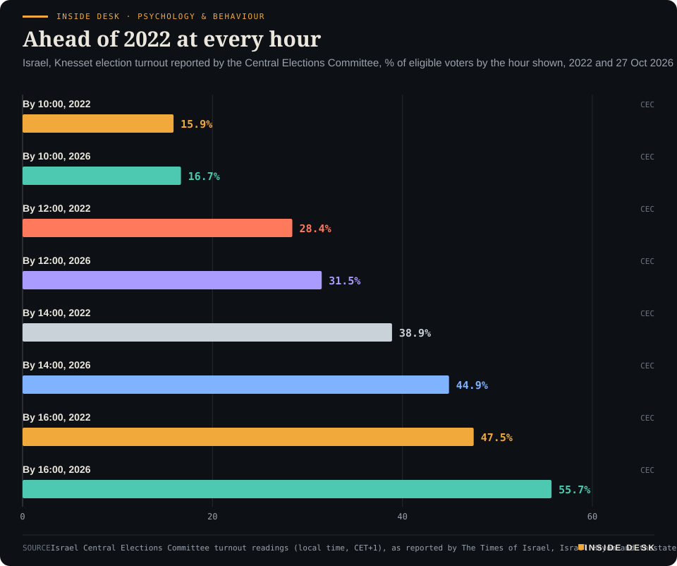
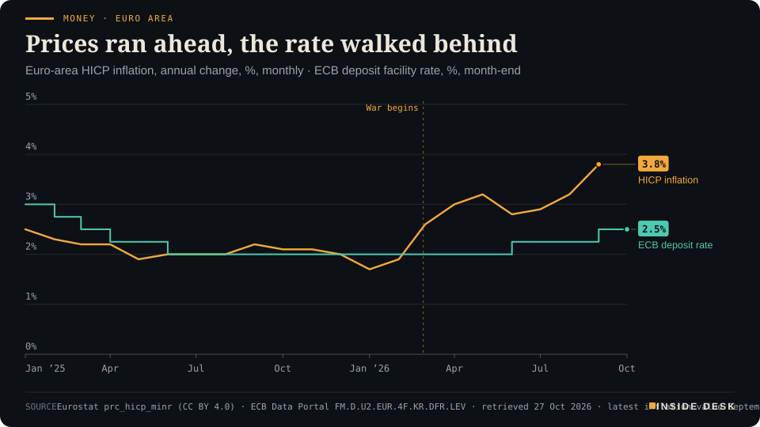
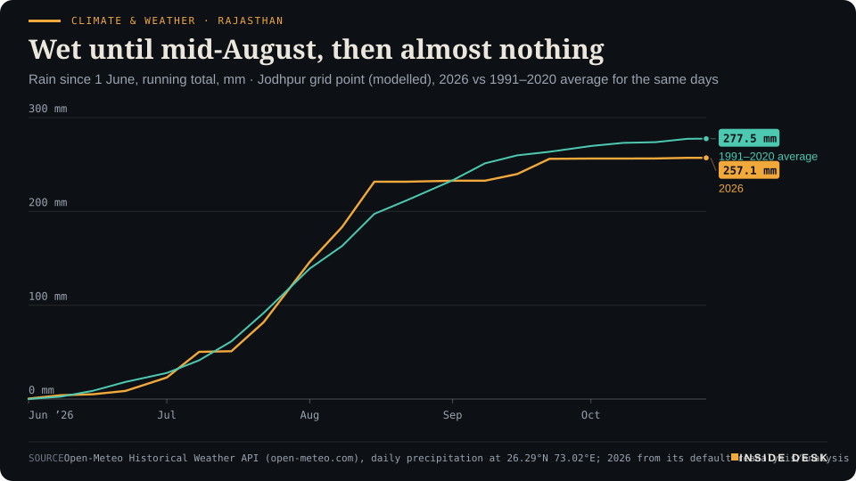
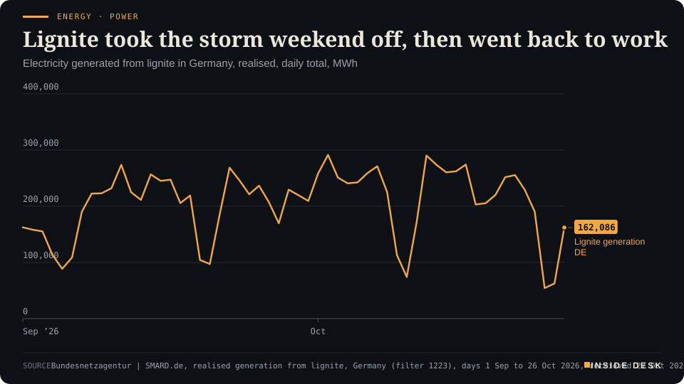

Inside Desk ePaper, Evening ePaper · Tue 27 Oct 2026
Tuesday, 27 October 2026Always free
Inside Desk
Evening ePaperPublished 17:59 CET · Berlin
Lead · Psychology & Behaviour
Israelis voted in record numbers by mid-afternoon. Both camps read the same turnout figure as a threat and a reason to hurry. Tonight's first numbers will be estimates; the habit worth keeping is to wait for the count.
Israelis voted in record numbers by the afternoon and both camps called it a threat. Wednesday's German power price came in at €249, the ECB meets on a 3.8% print, German households keep €189 of every €1,000, and Gulf crude reached buyers again. Eleven desks, every number sourced.
More people queued to vote than anyone expected, more oil got through than anyone feared, and Germans quietly kept saving; the machinery held.
Geo-economics · p. 5
Markets & Macro · p. 7
Energy & Industry · p. 11
Climate & Weather · p. 18
The day in one sentenceMore people queued to vote than anyone expected, more oil got through than anyone feared, and Germans quietly kept saving; the machinery held.
ContentsInside Desk · Evening ePaper27 October 2026
Israelis voted in record numbers by the afternoon and both camps called it a threat. Wednesday's German power price came in at €249, the ECB meets on a 3.8% print, German households keep €189 of every €1,000, and Gulf crude reached buyers again. Eleven desks, every number sourced.
11 edition pieces · 11 desks · Published 17:59 CET, 27 October 2026
24 ePaper extras, added , 27 October. They appear only in the ePaper and carry their own time.
17:30 Evening ePaper, updated live until 22:30 with an “Updated” time and a Latest page
Sun 10:00 The Sunday Magazine
Berlin time. Every issue is free.
How to read it
Swipe, use the arrow keys or the page strip. Tap any headline for the reading view. Press / to search, t for contents, +/− to zoom. Download the PDF.
LatestInside Desk · Evening ePaper27 October 2026
Latest
Final. Updates closed at 22:30 Berlin time.
Politics: Israel's exit polls show no bloc with 61 seats; Likud largest party, Arab parties at a record
Geoecon: Qatar asks Iran to show goodwill on Hormuz; China says it will send an envoy to the region
LeadInside Desk · Evening ePaper27 October 2026
Psychology & Behaviour · Lead · 3 min
Israelis voted in record numbers by mid-afternoon. Both camps read the same turnout figure as a threat and a reason to hurry. Tonight's first numbers will be estimates; the habit worth keeping is to wait for the count.
By 16:00 local time, 15:00 in Berlin, 55.7% of Israel’s eligible voters had cast a ballot, just over four million people1. The Central Elections Committee said that was the highest figure at that hour on its books; at the same point in 2022 it was 47.5%1. The records had been falling all day: 31.5% by noon, the highest at that hour in 53 years, and 44.9% by 14:00, about 3.29 million ballots2.
Desk arithmetic: 55.7 minus 47.5 is 8.2 percentage points ahead of 2022 at the same hour, and the gap widened at every reading the committee published3.
Inside Desk · Psychology & BehaviourAhead of 2022 at every hourIsrael, Knesset election turnout reported by the Central Elections Committee, % of eligible voters by the hour shown, 2022 and 27 Oct 2026

Bar chart of Israeli election turnout by the hour, 2022 against 27 October 2026. By 10:00 local time it was 15.9% in 2022 and 16.68% in 2026; by 12:00, 28.4% and 31.5%; by 14:00, 38.9% and 44.9%; by 16:00, 47.5% in 2022 and 55.7% in 2026, the latest reading.
Source: Israel Central Elections Committee turnout readings (local time, CET+1), as reported by The Times of Israel, Israel Hayom and thestateofisrael.com, retrieved 27 Oct 2026 · polls close 22:00 local; final turnout not yet known · CSV
One figure, two fears. Watch what the campaigns did with that number. Benjamin Netanyahu told right-wing voters to “race to the polls”, warned of high turnout in Arab and left-wing areas and claimed “they are trying to steal the election from us”, pointing to three Ra’am activists arrested on suspicion of bribing voters1. Gadi Eisenkot’s Yashar answered that the prime minister was laying the groundwork to contest the result, and told its own voters the margin “must be enormous”1. The committee said it had found no evidence of systematic tampering and was handling individual reports as they came in1.
This is the old behavioural loop of election days. A turnout figure is neutral; it does not say who voted. Yet each camp reads the other’s queue as a threat, and the threat becomes the reason to join the queue. Fear is a cheap mobiliser. It also leaves a residue: voters primed all day to expect theft are slower to accept a count that disappoints them.
The dull machinery did its job. The more useful story is the committee’s. Faced with lengthening lines, it changed its guidance so that polling officials could begin identifying the next voter while the current one was still behind the booth, and it made clear that anyone who arrives by 22:00 will be able to vote2. Not everyone had a smooth day. Haaretz and the Arab legal aid group Adalah relayed reports of waits of several hours and slow identity checks in Bedouin towns in the Negev and in Arab communities in the Galilee1. Those reports are now on the record, where complaints belong, rather than in a speech.
What you will see tonight, and how to read it. Israel has had a poll blackout since Friday night: no new poll results could be published until the stations close3. At 22:00 local, 21:00 CET, the television channels release exit polls, which are estimates from samples of voters, not results3. In 2022 the three main channels’ first exit polls gave the right-religious bloc 61 or 62 seats; it won 643. Meretz was given four or five seats by all three and finished below the threshold with none3. Soldiers’ and other double-envelope ballots are counted later at the Knesset, and official results are due by 4 November3.
Why does that matter? Because the first number sticks. In a Brennan Center experiment with 1,994 US registered voters, showing a candidate with 84% odds on a betting market raised the share who thought that candidate would win by 20 percentage points, whatever the polls said4. And a warning to be cautious about the odds made no difference to how much people relied on them4. Scepticism, in other words, is not a shield. A habit is.
The habit is boring and it works: treat tonight’s 21:00 figures as a forecast for a count that has not happened yet, and notice when a politician tells you the result before the committee does.
And give the queue its due. People do not stand for hours to post a ballot into a system they think is rigged. Whatever the speeches said today, four million votes by mid-afternoon are four million small acts of trust in an envelope, a ballot box and a count. That trust is the institution’s best asset. The way to keep it is to let the slow part, the counting, finish.
Geo-economicsInside Desk · Evening ePaper27 October 2026
Geo-economics · 2 min
Middle East crude exports are back above pre-war levels, Hormuz carries about 82% of its old flow, and the physical barrel has got cheaper. The futures market still prices the next attack.
This morning the count was ships at anchor. This evening it is barrels that got through. Middle East crude exports have averaged 17.3 million barrels a day so far in October, up from 16.4 million in September and above the 16.9 million of the two months before the war, according to Kpler data cited by Reuters1.
The strait is working, slowly and expensively. Crude flows through Hormuz reached 11.7 million barrels a day in October, about 82% of pre-war levels, against less than 1 million in April, excluding Iranian oil, Kpler says1. More tankers sail in convoys along Oman’s coast under US naval protection; about a third of crossings still use the Iran-controlled northern route, Reuters reports1. This happens under fire: 28 attacks on commercial shipping were confirmed or reported this month, the highest monthly tally in the Washington Institute’s tracking1.
Two prices for one barrel. Dated Brent, the benchmark for physical cargoes, has fallen about $15 in under two weeks to some $120, while Brent futures gained about $10, Bloomberg reports1. On Tuesday afternoon futures were down 1.7% at $113.882. The physical market is pricing what is available. The futures market is pricing what might happen next: Iran’s supreme leader said on Tuesday that the state of “neither war nor peace” needs to end, and discussed keeping “control” over the strait2.
Geo-economics · Short item · ePaper extra, added
Iran's leader met his security chief to discuss conditions for ending the war. Control of the strait was on the list. Washington is weighing a deal or more strikes.
Iran’s Supreme Leader Mojtaba Khamenei met Mohsen Rezaei, his top national security official, to discuss the Islamic Republic’s conditions for ending the war with the United States, according to a post on the supreme leader’s account cited by CNBC1. The current state of “neither war nor peace” needs to end, he said, and the two discussed “safeguarding national and regional security by maintaining control” over the Strait of Hormuz1.
Diplomacy, in layers. On Monday Saudi Arabia’s defence minister held direct talks with President Masoud Pezeshkian in Tehran, with senior military and intelligence officials from Pakistan and Turkey present1. Qatar’s representatives travelled to Tehran on Sunday, Reuters reported1. Tehran described the talks as a step towards regional security cooperation, with further consultations possible, according to the state outlet Tasnim1.
The other half of the table. President Donald Trump told Fox News on Sunday that he was approaching a decision on whether to strike a deal with Iran or intensify military operations1. Houthi attacks on Saudi Arabia continued over the weekend1.
The market’s verdict was modest: Brent futures fell 1.7% to $113.88 by 16:10 CET, a second day of losses1. Earlier in the day they had been down 1% at $114.742. A leader saying a war should end is not a treaty. But conditions are what treaties are made of, and someone has started listing them.
Geo-economicsInside Desk · Evening ePaper27 October 2026
Geo-economics · Short item · ePaper extra, added
Doha's weekly briefing asked Tehran for proof rather than positive statements. Beijing says it will send an envoy. Neither came with a date or a text.
Qatar’s foreign ministry used its weekly briefing on Tuesday to put the burden of proof where clerks like it. “We have heard positive statements from the Iranian side,” its spokesman Ibrahim bin Sultan Al Hashmi said, “but they still need to show goodwill”, meaning an end to threats against neighbours and a reopened Strait of Hormuz1. Asked whether Qatar’s delegation had carried a new proposal to Tehran, he said only that messages and ideas were still being exchanged, and announced no breakthrough1.
Beijing added a name to the list of mediators: China said on Tuesday it will soon send an envoy to countries in the region to help avoid another round of escalation2. Regional sources told The National that Monday’s four-way Tehran meeting produced a promise to keep talking, and that a second round, possibly in Turkey, has not been ruled out3.
Against that, the ledger is unchanged. Tehran wants the blockade of its ports lifted and oil sanctions removed; Washington wants enrichment cut1. ANZ research puts crude flows through the strait at around 60 per cent of normal1. An envoy is a travel plan, not a term sheet. Watch for a date for the second round and for any change in that 60 per cent. Nothing here is advice.
Geo-economics · Brief · ePaper extra, added
Benchmark earnings for very large crude carriers from the Middle East to China are nearing $1.4 million a day, more than 12 times pre-war levels, according to Reuters1. Freight has eased from its peaks, but the cost still squeezes refining margins and pushes producers to offer discounts, Bloomberg reports1.
The response is a change in contracts, not in speeches: Aramco and Adnoc have started selling some cargoes delivered to China and India, taking on shipping arrangements that buyers would normally handle1. Eleven supertankers were damaged this month alone, more than 30 since the war began1. A seller who pays for the voyage is a seller who wants to keep the customer. That is how trade survives a war: one contract clause at a time.
Markets & MacroInside Desk · Evening ePaper27 October 2026
Markets & Macro · 2 min
Europe's largest bank missed on revenue, not on profit, and its shares touched a six-month low. Around it, a drugmaker, a packaging firm and a chip-equipment maker raised the numbers that matter. The index barely moved.
HSBC’s shares fell nearly 7% on Tuesday and touched a six-month low, after third-quarter revenue missed estimates, partly because its wealth business grew more slowly1. Pretax profit was in line with expectations2. The bank index fell 1.1% and the FTSE 100 0.8% in the morning; the STOXX 600 was down 0.1% at 640.07 by 10:20 CET1. By early afternoon it had edged up 0.1%2.
Why a bank can earn and still disappoint. “Banks have been the winners of the latest quarter before this one,” said Ipek Ozkardeskaya of Swissquote Bank, but “short-term yields rising more than long term” is “eating into the income revenue”2. That is the dull machinery behind the headline: a bank borrows short and lends long, and when the short end climbs faster, the margin narrows. No scandal, just arithmetic.
The rest of the ledger was better. Novartis raised its full-year guidance for core operating income and rose 1.7%1. SIG Group, which makes packaging, jumped 9.4% after lifting its margin guidance1. BE Semiconductor rose 8.5% after Applied Materials said it had raised its stake in the Dutch maker of chip-packaging equipment to 20%1. “The earnings results, generally speaking, have been pretty solid,” said Richard Flax of Moneyfarm1.
France, the quiet weight. French consumer confidence fell five points to 80 in October, its lowest since June 2013, as student protests spread to unions1. French shares were flat after falling more than 2% last week1.
For you, the lesson of the day is that one large company can move a headline and very little else. Results season is a long queue of invoices being added up: more than a third of S&P 500 companies report this week2. Nothing here is investment advice.
Markets & Macro · Short item · ePaper extra, added
While Europe watched one bank, America published its receipts. They were better than expected, and the ten-year sat at 5%.
Three US releases arrived on Tuesday and all three beat the consensus. Durable goods orders rose 1.8% in September, against an expected 1.7%1. New home sales were 676,000, down 0.6% from August but above the 653,000 economists polled by Dow Jones had pencilled in1. Consumer confidence rose to 91.7 in October, against an estimate of 81.01.
The companies said the same, mostly. Coca-Cola and United Parcel Service, a bellwether for the economy, raised their forecasts, Reuters reports2. Hilton and JetBlue showed the other side: rising costs from the Middle East conflict2. More than a third of S&P 500 companies report this week2. That is the useful kind of noise: hundreds of firms adding up what they sold and what it cost.
Markets & Macro · Brief · ePaper extra, added
Spot gold eased 0.1% to $4,010.96 an ounce on Tuesday, Reuters reports1. The euro slipped 0.2% to $1.114, near the May low it touched two weeks ago1. Neither moved much, and that is the information: markets are waiting for the Fed on Wednesday, the ECB on Thursday and the Bank of Japan, all three expected to hold1.
“We remain medium-term bullish on the ‘picks and shovels’ trade,” said Mohit Kumar of Jefferies, while admitting that “a number of companies will not remain profitable and even go bust”1. A forecast that names its own losers is more honest than most. Nothing here is investment advice.
Politics & InstitutionsInside Desk · Evening ePaper27 October 2026
Politics & Institutions · 2 min
The Student List won 140 of 250 seats with no prime minister picked. The constitution now sets the pace: 30 days to a parliament, 90 more to a government, a president by 27 December.
Serbia’s Republic Electoral Commission has put numbers on Sunday’s upset. On preliminary results from 8,187 polling stations, the Student List won 2,267,615 votes, 52.71%, and 140 seats; Aleksandar Vučić’s United Serbia list won 39.17% and 104 seats1. About 4.3 million people voted1. Turnout was 68.78%, the highest in more than 30 years, according to the commission’s Sunday figures2. A majority needs 126 of the 250 seats2.
Desk arithmetic: 140 seats is 14 more than a majority, so the winners need no coalition partner.
What the movement does not yet have is a name at the top. It ran deliberately without a hierarchy and named no candidate for prime minister2,3. Ilija Srdanović, the Novi Sad cardiologist who headed the list, is widely seen as the likeliest choice, but the ministries of interior, finance and justice are open2. One Belgrade analyst told the Guardian the movement’s decision-making also needed to “be sped up”, since choosing candidates “took a long time – months”3.
The constitution will help with that. The new National Assembly must meet within 30 days of the final result; a government must be formed within 90 days after that2,3. Separately, because Vučić resigned as president on 27 September, Ana Brnabić, the assembly’s president and acting head of state, must call a presidential election by 27 December2.
Politics & Institutions · Short item · ePaper extra, added
Turkey's foreign affairs committee approved the joint defence agreement with Saudi Arabia and Pakistan. The other two have already ratified it.
The Turkish parliament’s Foreign Affairs Committee on Tuesday approved the bill to ratify the Mecca Joint Defense Agreement between Türkiye, Saudi Arabia and Pakistan1. The pact was signed in Mecca on 7 August by President Erdoğan, Crown Prince Mohammed bin Salman and Prime Minister Shehbaz Sharif; Saudi Arabia and Pakistan have completed their own ratification1. It treats an attack on one as an attack on all three2.
Deputy Foreign Minister Levent Gümrükçü told the committee the agreement was “entirely defensive” and “envisions integration rather than bloc-building”1. It provides for regular consultations, joint training and exercises, defence-industry co-production and technology sharing1. The committee chairman, Fuat Oktay, answered the obvious question: was this an alternative to NATO? “Absolutely not,” he said1.
The timing gives the paperwork weight. Since the Houthis stepped up attacks on Saudi Arabia this month, neither Türkiye nor Pakistan has announced strikes on the group, and on Monday the Saudi defence minister, Pakistan’s army chief and Türkiye’s intelligence chief were in Tehran trying to calm things2.
What you are watching, then, is a parliament doing the slow part. A treaty signed by leaders in August becomes binding only when legislators have read it, questioned a minister and voted. That is the order things should happen in, and it is happening in that order.
Politics & InstitutionsInside Desk · Evening ePaper27 October 2026
Politics & Institutions · Short item · ePaper extra, added
Israel's three main exit polls put Likud first and Netanyahu's bloc second. None gives either camp 61 seats. They are estimates; the count runs to 4 November.
Polls closed at 22:00 local, 21:00 in Berlin, and the first numbers did what this evening’s lead said they would: arrive loudly and settle nothing. Channels 11, 12 and 13 all gave Benjamin Netanyahu’s bloc 50 of the Knesset’s 120 seats and the Jewish-led bloc opposing him 52 or 531. A government needs 611.
Likud is projected to be the largest party with 24 or 25 seats, down from its current 32, ahead of Gadi Eisenkot’s Yashar on 21 to 231. Kan’s poll has Naftali Bennett’s B’Yachad third on 142. Arab-led parties are projected to win 17 or 18 seats, a record; they hold 10 today1. Turnout had reached 74.3% by 20:00 local, against 66.3% at that hour in 2022, the Central Elections Committee said4.
Desk arithmetic: 52 or 53 plus 17 or 18 is 69 to 71 seats opposed to Netanyahu, which is why the Times of Israel counts a clear anti-Netanyahu majority of 701. But some Jewish-led opposition parties have ruled out governing with Arab parties, which may close that path1. Two pro-government channels showed Netanyahu’s bloc doing better, at 60 and 55 seats1.
Remember 2022, when the first exit polls under-counted the winning bloc and gave a party seats it never got. The committee publishes tallies through the night and the official result by 4 November3. Until then, read every claim of victory as a forecast. Nothing here is advice.
A week before the US midterms, the Brennan Center has read the end-of-September filings in four close governor races1. In Wisconsin, three donors, Diane Hendricks and Richard and Liz Uihlein, accounted for 92% of Republican Tom Tiffany’s fundraising in the prior quarter1. State law caps individual gifts to statewide candidates at $20,000 but not gifts to parties, which may pass on unlimited sums: the three gave nearly $60 million to the state Republican Party, which transferred nearly $35 million to Tiffany1. Democrat David Crowley has raised about $12 million, $3 million of it from his party1. The Brennan Center calls the party route a loophole; it is a legal one, and the cap and the exemption are both Wisconsin law1. The useful fact is that you can see it at all, because the filings are public.
Psychology & BehaviourInside Desk · Evening ePaper27 October 2026
Psychology & Behaviour · Short item · ePaper extra, added
A study of 318 Turkish adults finds that self-compassion goes with fewer depressive symptoms, and that much of the link runs through the ability to think flexibly.
Researchers at Sakarya University surveyed 318 adults aged 18 to 65 and published the results in Frontiers in Psychology1. People who treated themselves with more kindness reported fewer depressive symptoms; in a simple model, self-compassion accounted for roughly 32% of the variation in depression scores1.
The interesting part is the route. The authors tested two possible pathways at once: unconditional self-acceptance, valuing yourself without needing success or approval, and cognitive flexibility, the ability to reinterpret a bad experience and find another response1. Flexibility carried the clearer share of the link; self-acceptance showed only a weaker indirect effect1. Self-compassion kept a direct link of its own even with both in the model1.
Read it with the brakes on. It is one survey at one point in time, so it shows association, not cause; it is just as possible that feeling less low makes people kinder to themselves1. The sample was recruited online, was 76% female and highly educated1. The authors call for longitudinal and experimental studies, and say that training programmes built on these skills remain a hypothesis to test1.
Still, the finding points somewhere practical. Flexibility is a skill, not a temperament. You cannot order yourself to feel better, but you can ask a second question about a bad day: what else could this mean? The study suggests that the habit of asking may be where self-kindness does its work.
About half of US adults now use AI chatbots, but only 8% say they are using them for information about this year’s elections, according to a Pew Research Center survey of 5,273 adults taken from 12 to 18 October1. Among those who do, 76% look up where candidates stand, 71% check the accuracy of something they heard or read elsewhere, and 40% ask for suggestions on how to vote1. Use is higher under 50 (11%) than over 50 (4%)1. The reassuring detail is the second figure: most people who ask a machine about an election are fact-checking, not outsourcing the choice. The question for the tools is whether their answers are worth checking against.
Energy & IndustryInside Desk · Evening ePaper27 October 2026
Energy & Industry · 2 min
The auction for Wednesday cleared at €249.21 per megawatt hour, the dearest day since mid-September. The plants that sat out the storm weekend have returned, and even the cheapest hour now costs €190.
This morning’s piece called Tuesday’s €155 the end of the storm discount. The midday auction has since priced Wednesday, and the answer is steeper. The German-Luxembourg day-ahead price for delivery on Wednesday 28 October averages €249.21 per megawatt hour, according to SMARD, the Bundesnetzagentur’s data portal1. That is the highest daily average since 14 September, when it reached €256.551. Desk arithmetic: Wednesday costs about 61% more than Tuesday’s €155.11 and a little over twice Monday’s €116.57.
No cheap hour left. On Tuesday the midday hour, 12:00 to 13:00 CET, cleared at €43.501. On Wednesday the cheapest hour, 13:00 to 14:00 CET, clears at €189.91, and the dearest, 18:00 to 19:00 CET, at €343.091. Desk arithmetic: the evening peak is now about 1.8 times the cheapest hour, against six times on Tuesday. The spread narrowed because the floor rose, not because the evening got cheaper.
Who came back. The storm weekend showed what the system does when wind is plentiful: it switches off its oldest fuel. Lignite plants generated 54,346 megawatt hours on Saturday 24 October, the lowest day since 14 June, and 62,470 MWh on Sunday1. By Monday they were back at 162,086 MWh1. Desk arithmetic: lignite output roughly tripled in two days.
Energy & Industry · Short item · ePaper extra, added
The Gas Exporting Countries Forum adopted a Moscow Declaration on Tuesday. The host asked for long-term contracts and crisis consultations among exporters.
The eighth summit of the Gas Exporting Countries Forum ended in Moscow on Tuesday with the adoption of a Moscow Declaration, according to the Kremlin’s record of the plenary session1. Around the table sat, among others, Qatar’s Emir Sheikh Tamim bin Hamad Al Thani, Iran’s President Masoud Pezeshkian and Algeria’s prime minister, Sifi Ghrieb1.
The host’s figures. Vladimir Putin told the session that forum members account for 70% of the world’s natural gas reserves and around 40% of global exports1. He said global gas consumption grew by 1.2% last year to 4.2 trillion cubic metres, and cited a projection of 5.5 trillion cubic metres a year by the middle of the century1.
The host’s asks. He proposed expanding consultations within the forum on responding to crises in the gas market, including physical threats to infrastructure, and pointed to OPEC Plus as a model of cooperation on the oil side1. He argued that investment “must be underpinned primarily by long-term contracts”1. He also said prices “could fall just as sharply” as they have risen1.
Energy & Industry · Brief · ePaper extra, added
Brent crude futures were down 1.7% at $113.88 a barrel at 16:10 CET on Tuesday, and US WTI 1.7% lower at $100.05, CNBC reports; it was the second falling session in a row1. Iran’s Supreme Leader Mojtaba Khamenei met the country’s top national security official, Mohsen Rezaei, to discuss Tehran’s conditions for ending the war with the United States, and said the state of “neither war nor peace” needs to end, according to a post on his account1. Tehran described Monday’s talks with Saudi, Turkish and Pakistani officials as a step towards regional security cooperation, according to the state outlet Tasnim1. Houthi strikes on Saudi Arabia kept earlier losses limited1. Talk lowers the price by a dollar or two; a reopened sea lane would lower it by much more. Nothing here is investment advice.
Money, FX & CommitteesInside Desk · Evening ePaper27 October 2026
Money, FX & Committees · Podium vs Print · 2 min
Lagarde says the energy shock is too large to look through, but a measured response will do. The September print says prices rise 3.8% a year against a deposit rate of 2.50%. Thursday is about which of the two sentences carries more weight.
Podium
“The energy shock is too large to “look through” but a measured response remains appropriate to keep inflation in check.”
Christine Lagarde, President of the ECB, statement to the IMF's International Monetary and Financial Committee, 17 October 2026
Print3.8%
Annual inflation in the euro area in September, up from 3.2% in August and 1.9% in February. The ECB deposit rate is 2.50%.
Eurostat, euro-area HICP, September 2026, Latest monthly value, retrieved 27 October 2026
The podium. “The energy shock is too large to ‘look through’ but a measured response remains appropriate to keep inflation in check,” Christine Lagarde told the IMF’s steering committee ten days ago1. In the same statement she said long-term interest rates have risen notably since September, and that this “will slow growth and reduce pass-through by more than projected”1.
The print. Euro-area inflation was 3.8% in September, according to Eurostat’s monthly data, after 3.2% in August and 1.9% in February, the month the war began2. The ECB’s deposit rate has gone from 2.00% to 2.50% in two steps, in June and September5.
Money · Euro areaPrices ran ahead, the rate walked behindEuro-area HICP inflation, annual change, %, monthly · ECB deposit facility rate, %, month-end

Line chart since January 2025 of euro-area HICP inflation and the ECB deposit rate. Inflation is 2.5% in January 2025, between 1.9% and 2.2% for the rest of 2025, 1.7% in January 2026 and 1.9% in February, then rises after the energy shock to 3.2% in May, 2.8% in June and 3.8% in September 2026, the latest value. The deposit rate falls from 3.00% to 2.00% by mid-2025, rises to 2.25% in June 2026 and to 2.50% in September 2026, where it stands in October 2026. The ECB decides on 29 October.
Source: Eurostat prc_hicp_minr (CC BY 4.0) · ECB Data Portal FM.D.U2.EUR.4F.KR.DFR.LEV · retrieved 27 Oct 2026 · latest inflation value September 2026 · CSV
The gap. Desk arithmetic: inflation at 3.8% against a deposit rate of 2.50% leaves the real policy rate at about minus 1.3 points. On the face of it, money is still cheap. …
Money, FX & Committees · Short item · ePaper extra, added
The ECB's own adverse case for energy has already been overtaken. Previews still expect a hold on Thursday, and the bill for waiting is set in December.
When the ECB drew up its projections in September, its adverse scenario had oil rising to about $100 a barrel and gas to €75 per megawatt hour in the fourth quarter. Current spot prices are about $115 and €95, MUFG Research notes1. The bad case has become the base case.
And yet: a pause. MUFG expects the deposit rate to stay at 2.50% on Thursday, because sovereign yields rose sharply and financial conditions tightened1. “A pause here is reasonable,” writes Henry Cook, who expects a hike in December, when new projections arrive, and another one after that1. Markets price about 20 basis points of tightening for December1. Economists polled by Reuters see a 70% chance of a December hike2.
Why wait, if energy is dearer? Because the ECB reacts to energy only if it seeps into everything else. In October’s purchasing managers’ survey, manufacturing input costs accelerated sharply, but services output prices fell back, MUFG says1. …
Money, FX & CommitteesInside Desk · Evening ePaper27 October 2026
Money, FX & Committees · Brief · ePaper extra, added
The Federal Reserve’s two-day meeting began on Tuesday, with the decision due on Wednesday. The two-year Treasury yield rose 3 basis points to 4.741%, CNBC reports, and fed funds futures price about a 90% chance that the range stays at 3.75%–4%1. Traders are pricing an increase in December, Reuters says2.
The two-year is the number to watch: it moves with what the market expects the Fed to do next, not with what the Fed says today. Chairman Kevin Warsh’s press conference follows the decision, and investors will parse it for hints on whether the Fed hikes again before the end of the year1. The Fed’s preferred inflation gauge, PCE, is due on Thursday1. Nothing here is investment advice.
Ordinary & Inherited LifeInside Desk · Evening ePaper27 October 2026
Ordinary & Inherited Life · 2 min
German households saved 18.9% of their disposable income in 2025, well above the EU average of 14.3%. The rate has edged down from 19.6% and held there into 2026.
Ahead of World Savings Day on 30 and 31 October, the Statistisches Bundesamt has published one number for the household ledger: in 2025 private households in Germany saved 18.9% of their disposable income, against an EU average of 14.3%1. Desk arithmetic: of every €1,000 that reached a German household after taxes and transfers, about €189 was put aside; the EU average comes to about €143.
The neighbours. French households saved 17.8%, Dutch 17.4%, Austrian 15.7% and Italian 10.8%1. Switzerland stood well above at 27.4%, which Destatis puts down to the larger role of private pension saving there; the United States was low at 10.7%1. Over the ten years to 2025 German households saved 19.1% of their income on average1.
The direction. The rate has eased slightly. It was 19.6% in 2024 and 18.9% in both 2025 and the first half of 20261. The peak came in 2020, at 22.9%, when the pandemic left people consuming less than usual1. Desk arithmetic: from 2024 to 2025 the rate fell by 0.7 points, or about €7 less saved per €1,000 of income.
Read the small print. This is the gross rate, the measure used for international comparisons. It counts depreciation, mostly on owner-occupied and rented homes, in both saving and income1. Price gains or losses on shares and property count as neither1. So a rising share price does not make you a better saver in these statistics, and a falling one does not make you a worse one. The net rate, with depreciation deducted, is clearly lower1.
What the figure does show is a steady habit. Over ten years that included a pandemic and an energy shock, German households put aside 19.1% of their income on average1. That habit is the quiet balance sheet behind every bank deposit, pension contract and home loan. It is not glamorous. It is why the system has a cushion. Nothing here is advice.
Ordinary & Inherited Life · Short item · ePaper extra, added
A litre of heating oil cost €1.75 on the German average at midday on Tuesday. Cologne paid €1.80, Nuremberg €1.71.
At 11:52 CET on Tuesday, 100 litres of heating oil cost €175.04 on the German average for a 3,000-litre order, up from €173.15 at Monday’s close, according to the price service HeizOel241. That is about €1.75 a litre1. Desk arithmetic: a 3,000-litre tank at that average comes to about €5,251, some €57 more than a day earlier.
Where it costs more. Among the large cities, buyers in Cologne paid the most, €1.80 a litre, and buyers in Nuremberg the least, €1.711. Most Länder got dearer; Bremen and Hesse got slightly cheaper1. Desk arithmetic: nine cents a litre between those two cities is about €270 on a 3,000-litre order.
Why the bill is sticky. Transport keeps the bill high even when crude eases. The International Energy Agency reported that crude bound for Asia cost on average $93 a barrel at loading in October but $131 delivered, HeizOel24 notes, and such freight costs can keep diesel and heating oil dear in Europe even when Brent falls1. Austria paid €185.76 per 100 litres, Switzerland 178.46 francs1.
Ordinary & Inherited Life · Brief · ePaper extra, added
The Entsorgungsverband Saar, which handles waste and wastewater for Saarland households, plans to raise waste fees by almost 8% in both 2027 and 2028, Saarländischer Rundfunk reports1. The managing director, Holger Schmitt, cites the carbon price, pay rises for refuse workers and higher logistics costs1. For an average household with a 120-litre bin emptied ten times a year, that means almost €10 more next year and almost €11 more in 20281. The wastewater fee rises 2.5%, about 36 cents a head a month, or roughly €4.50 a year1. These are proposals: the municipal councils vote, and the result is due at the association’s assembly in December1. A fee rise that passes through elected councils, with the reasons on the table, is how a public service should send its bill.
Tech & ComputeInside Desk · Evening ePaper27 October 2026
Tech & Compute · 2 min
Nvidia will put $3 billion and AMD $1 billion into Meta's share offering. When the chip makers fund the buyer of their chips, read the order book and the cheque together.
This morning’s tech note was about a chip maker standing behind the value of its own hardware. By mid-morning there was a second variation on the theme. Nvidia said on Tuesday it will invest $3 billion in Meta’s equity offering, and AMD announced $1 billion, CNBC reports1.
The offering. On Monday Meta said it wants to raise $95 billion for AI infrastructure: $35 billion first, through underwritten public share offerings, then another $60 billion through an at-the-market programme1. Meta’s announcement said Nvidia, AMD and Broadcom were interested in buying up to $5 billion of the shares1. Desk arithmetic: the two confirmed stakes come to $4 billion, about 4% of the total Meta wants to raise, and about 11% of the first $35 billion.
What comes with the cheque. Nvidia said Meta would expand its deployment of Vera Rubin systems and Vera processors, and that the two would deepen work on Muse, Meta’s AI agent1. AMD said its Helios racks were running at Meta and its EPYC processors powered Muse1. So the money and the orders travel together. That is not improper; it is common in industries where supplier and customer need each other for years. It does mean you should read a supplier’s sales figures with its investment portfolio open beside them.
A habit, not a one-off. Nvidia has invested in OpenAI, Anthropic, Intel and xAI, and has taken part in 121 investment rounds so far this year, up from 13 in 2022, according to Dealroom data cited by CNBC1. AMD has been in 25 rounds this year, against two in 20221. Desk arithmetic: Nvidia’s count is more than nine times what it was four years ago.
The market’s verdict on Tuesday was mild: AMD up 3%, Nvidia flat, Meta down 1%1. That calm is the right register. Vendor finance is old machinery, used for aircraft, ships and telephone networks. It works best when everyone can see who owes what to whom, which is why this week’s earnings filings matter more than this week’s press releases. Nothing here is investment advice.
Tech & Compute · Short item · ePaper extra, added
Anduril and Qualcomm announced BlueChip, a rugged laptop with about 90% of its components from the US or allied countries. The display is still a problem.
The defence company Anduril and the chip designer Qualcomm announced a computer called BlueChip on Tuesday, TechCrunch reports1. The first model is a hardened laptop for the military, government agencies, first responders and police; preorders open in 20271.
The selling point is the list. About 90% of the components in the first generation come from the US or allied countries, including the processor, a Snapdragon X Series chip built at TSMC’s new facility in Arizona1. “We have a technical roadmap to get to 100% domestic over time,” said Anduril’s founder, Palmer Luckey1. He named the display as one of several parts that, by his account, are still made only in China; he has found an American supplier for the cover glass1.
The honest price tag. No price yet, but Luckey estimates about 20% above typical high-end PCs1. …
Tech & Compute · Brief · ePaper extra, added
Opera has introduced WebAI, a new web standard that lets AI models run directly in the browser rather than in the cloud, TechCrunch reports1. It works with open-weight models such as Google’s Gemma and, on Macs, Apple’s on-device foundation model1. An early preview is in Opera One, with Opera GX and Opera Neon to follow; users must opt in1. “Users don’t need AI subscriptions, the information the local AI handles stays on their own device,” the company said1. The trade-off is your own hardware: performance depends on the machine1. A model on your own disk is less exciting than one in a data centre. It is also one fewer place your text has to travel.
Health & CareInside Desk · Evening ePaper27 October 2026
Health & Care · 2 min
WHO Europe opened its annual meeting in Copenhagen with the numbers that rarely make headlines. Most of them are about routine done well, and some are about gaps.
Speeches at international meetings are usually skipped, and usually rightly. Tuesday’s opening address at WHO Europe’s Regional Committee in Copenhagen is worth reading for its numbers, not its rhetoric1. Corinne Capuano, the officer-in-charge of the regional office, delivered it while Regional Director Hans Kluge is on special leave, after what she called “a year of hard change”, with staff leaving in a reorganisation1.
Start with the dull machinery. Between January and October, the region’s teams analysed 48,000 pieces of information on possible health threats; 35 needed an operational response1. Desk arithmetic: about one in 1,400, and 47,965 that did not need one. This year’s responses included a hantavirus outbreak on a cruise ship in May, dengue and West Nile virus in the summer, and the first documented human infection with Shamonda virus1. For the first time, every state in the region filed its annual report under the International Health Regulations, and the region now has 38 classified emergency medical teams1. A sorting office that reads every letter and acts on a few is doing its job.
The routine wins are larger than they sound. Across the region, 91% of children get all three doses of the diphtheria, tetanus and whooping-cough vaccine, measles cases fell by 75% in 2025 compared with 2024, and 92% of countries have introduced HPV vaccination1. Latvia restricted alcohol availability and alcohol-related deaths fell significantly within five months, she said1.
The gaps were stated just as plainly. One in five tuberculosis cases goes undiagnosed or unreported, half of HIV diagnoses come too late, and HIV deaths are rising1. WHO Europe’s analysis counts 1.8 million deaths among people under 75 that prevention or treatment could avoid1. …
Health & Care · Short item · ePaper extra, added
A cyberattack shut clinics at New Mexico's only Level 1 trauma centre on Monday. By the evening, the hospitals were open again.
On Monday, the University of New Mexico’s health system in Albuquerque detected a network breach at around 11:30 local time (18:30 CET), according to a message to staff reported by the university’s student newspaper1. About 40 minutes later, staff were asked to shut down and unplug computers and turn off Wi-Fi on mobile devices1. The system runs the state’s largest teaching hospital and its only Level 1 trauma centre1.
By 14:30 local time (21:30 CET) it was diverting ambulances to other hospitals and had cancelled all clinic appointments for the day1. …
Health & Care · Brief · ePaper extra, added
The US Centers for Medicare & Medicaid Services has added a 30-day, all-cause readmission rate after sepsis to its Hospital Readmissions Reduction Program, the seventh condition on the list; it covers Medicare patients aged 65 and over1. Hospitals get confidential early-look reports for the 2028 and 2029 programme years; financial penalties start in fiscal 20301. Studies show that about a quarter of sepsis survivors are readmitted within 30 days, with a median of 11 days1. Because the measure counts every unplanned return, a return with heart failure or a drug side effect counts as much as a relapse1. The advice from clinicians is plain: plan discharge from day one, check the infection is actually cleared, and tell patients which symptoms mean “call” and which mean “come in”1. One nurse noted that patients’ toothbrushes often stay in the wrapper; brushing helps prevent pneumonia1. A penalty is crude. A checklist with a toothbrush on it is not.
Security & OrderInside Desk · Evening ePaper27 October 2026
Security & Order · 2 min
Finland's president and Norway's prime minister phoned Vladimir Putin on Tuesday. Both sides published accounts. They agree on the Abu Dhabi talks and the phone line, and on little else.
Alexander Stubb and Jonas Gahr Støre spoke to Vladimir Putin by telephone from Helsinki on Tuesday1. Norway’s government said the call followed the two leaders’ meeting in Oslo on 20 October, was held “in consultation with Ukraine” and was meant to convey messages directly to Putin about the coming negotiations in Abu Dhabi1. The Kremlin said the call came at the Finnish and Norwegian request2.
Where the accounts agree. Both sides tie the call to Abu Dhabi. The Kremlin wrote that the three “welcomed the agreement to resume trilateral talks” between Russia, Ukraine and the United States there in early to mid-November2. Both mention security in the Baltic Sea and the north; the Kremlin’s version adds that the two Nordic leaders stressed “international maritime law and the freedom of navigation”2. And the Kremlin records that the three agreed to keep in direct telephone contact2.
Where they do not. The Nordic text stresses what it was not: Stubb and Støre “did not speak on the behalf of Europe as a whole,” and they repeated their support for Ukraine1. “Ending the war requires direct discussions,” Stubb said; Støre spoke of “enormous human and material costs” and of de-escalation1. The Kremlin text instead has Putin restating the war’s “root causes” and saying a lasting peace requires Russia’s interests to be considered “in full and without any conditions attached,” while blaming EU and NATO policy for prolonging the fighting2.
The Kremlin also used the call to announce something concrete: a US-mediated humanitarian operation under way near Oleshky, with a temporary ceasefire in the Kherson sector2. Reuters reported that Ukraine’s human rights commissioner confirmed Kyiv was honouring the halt, even as strikes continued elsewhere, including on Kyiv overnight3.
Two neighbours with long borders opened a channel without claiming a mandate they do not have, and agreed to keep it open. That is modest. Modest channels are how the larger ones get built.
Security & Order · Short item · ePaper extra, added
Prosecutors charged two London men after a police investigation into an incident at the Gloucestershire airbase. Police believe the foreign intelligence service involved is Iran's.
The Crown Prosecution Service said on Tuesday that two men, both 24 and from Westminster, London, have been charged under the National Security Act 2023 after a Counter Terrorism Policing investigation into an incident involving RAF Fairford1. Mohmed Abdulkarim is charged with conduct likely to materially assist a foreign intelligence service between 31 August and 28 September1. Nouman Essghir is charged with being in the vicinity of a prohibited place on 22 August for a purpose prejudicial to the UK1. Both were due at Westminster Magistrates’ Court on Tuesday1.
Counter Terrorism Policing said it believes the intelligence service involved is Iran’s2. …
Security & Order · Brief · ePaper extra, added
Mohammed Ali al-Houthi, a member of the Houthis’ political bureau, said on Tuesday that the Egyptian parliament’s decision to authorise military support for Saudi Arabia amounted to declaring “war against the Republic of Yemen”1. His Telegram statement mostly answered Monday’s visit to Tehran by the Saudi defence minister, Pakistan’s army chief and Türkiye’s intelligence chief, who met Iranian leaders to try to de-escalate1. He said the group was “not afraid of any alliance”1. Since the Houthis stepped up attacks on Saudi Arabia this month, neither Pakistan nor Türkiye, Riyadh’s partners in the Mecca defence pact, has announced strikes on the group1. For now the words are louder than the orders, and the diplomats are still travelling.
Climate & WeatherInside Desk · Evening ePaper27 October 2026
Climate & Weather · 2 min
Rajasthan and Gujarat joined Karnataka, Maharashtra and Andhra Pradesh. The relief comes as cattle camps and paused loan collections, the unglamorous kind.
India’s drought map grew on Tuesday. Rajasthan has declared drought in 80 tehsils (sub-districts) across 14 districts, and Gujarat in four districts: Kutch, Devbhumi Dwarka, Jamnagar and Porbandar1. They follow Karnataka, Maharashtra and Andhra Pradesh1. Karnataka’s government says its latest estimates put 80% of the kharif crop, the monsoon-season harvest, as destroyed1.
In Rajasthan, Jodhpur has the most drought-hit tehsils at 12, followed by Barmer and Jalore with 10 each1. Of the 80, 69 are classed as severely and 11 as moderately hit1. Bajra, jowar, moong, moth beans and sesame have been lost, and Jodhpur’s water storage stood at 15.15% on 16 October1.
Climate & Weather · RajasthanWet until mid-August, then almost nothingRain since 1 June, running total, mm · Jodhpur grid point (modelled), 2026 vs 1991–2020 average for the same days

Line chart of modelled rainfall at a Jodhpur grid point, running total from 1 June. In 2026 the total runs slightly below the 1991–2020 average through July, pulls ahead in early August to 231.6 mm by 15 August, then adds only 25.5 mm more, ending at 257.1 mm on Monday 26 October 2026, the latest value. The 1991–2020 average for the same days keeps climbing to 277.5 mm by 26 October.
Source: Open-Meteo Historical Weather API (open-meteo.com), daily precipitation at 26.29°N 73.02°E; 2026 from its default reanalysis/analysis blend, 1991–2020 average from ERA5 (Copernicus/ECMWF); desk running totals at weekly points; retrieved 27 Oct 2026 · Open-Meteo data CC BY 4.0. Modelled grid values for one point, not station readings or a district average. · CSV
Climate & Weather · Short item · ePaper extra, added
Three wildfires in the Upper Peninsula have burned into the forest floor. Officials say only soaking rain or heavy, wet snow will put them out.
Wildfire season in Michigan usually means spring, after the snow melts and before the leaves come out1. This year it is late October, and the worry is the coming spring too.
At least three large wildfires have been burning in the state’s Upper Peninsula since early October, covering about 1,400 acres, and they remain only partially contained1. Desk arithmetic: about 570 hectares. Lingering drought has let embers burn several feet down into the duff, the layers of decaying plant matter on the forest floor1. Officials fear the fires could smoulder through winter and flare up again in spring, like the “zombie fires” of Alaska’s and Canada’s peatlands1.
“At this point in time, I wouldn’t count it out,” said Keith Murphy, the state natural-resources department’s protection manager for the region1. “Usually, we have the droughty August and we run into deep burning, but it’s just continued on through October now,” he said1. Only saturated soil will finish the job, and Murphy said heavy, wet snow would do more than light, fluffy lake-effect snow1.
There is precedent, and it is not frightening. A peat fire in Allegan County smouldered for nearly a year before it was put out in autumn 2013, and the 1976 Seney fire, which burned eight feet into peat, was finally put out by melting snow the next spring1.
The useful part is the plan: officials will monitor how rain and snow affect the fire sites in the coming months1. Fire crews who keep watching a fire nobody can see are the adaptation story.
Climate & WeatherInside Desk · Evening ePaper27 October 2026
Climate & Weather · Brief · ePaper extra, added
America’s harvest is a weather story told in percentages. By Sunday, 79% of US soybeans were harvested, two points ahead of the five-year average of 77%, after a very late start in September1. Corn was 60% harvested, six points behind the average of 66%; in Iowa, the largest producer, only 47% is in, against a usual 67%1. Of the corn still standing, 56% is rated good to excellent1. DTN’s meteorologist expects scattered showers and mostly above-normal temperatures this week, with “minor” disruptions to fieldwork and possible tropical moisture reaching Texas on Friday1. Nobody in that report is predicting a shortage. They are predicting a lot of long days on a combine.
Charts and dataInside Desk · Evening ePaper27 October 2026
Charts and data
Energy · PowerLignite took the storm weekend off, then went back to workElectricity generated from lignite in Germany, realised, daily total, MWh

Line chart of daily electricity generation from lignite in Germany from 1 September to 26 October 2026, in megawatt hours. It averages about 197,771 MWh a day in September and peaks at 291,434 MWh on 2 October. It stands at 255,448 MWh on Wednesday 21 October, drops to 54,346 MWh on storm Saturday 24 October, the lowest day since 14 June 2026, and 62,470 MWh on Sunday 25 October, then climbs back to 162,086 MWh on Monday 26 October, the latest value.
Source: Bundesnetzagentur | SMARD.de, realised generation from lignite, Germany (filter 1223), days 1 Sep to 26 Oct 2026, retrieved 27 Oct 2026 · CC BY 4.0 · CSV
Money · Euro areaPrices ran ahead, the rate walked behindEuro-area HICP inflation, annual change, %, monthly · ECB deposit facility rate, %, month-end
Line chart since January 2025 of euro-area HICP inflation and the ECB deposit rate. Inflation is 2.5% in January 2025, between 1.9% and 2.2% for the rest of 2025, 1.7% in January 2026 and 1.9% in February, then rises after the energy shock to 3.2% in May, 2.8% in June and 3.8% in September 2026, the latest value. The deposit rate falls from 3.00% to 2.00% by mid-2025, rises to 2.25% in June 2026 and to 2.50% in September 2026, where it stands in October 2026. The ECB decides on 29 October.
Source: Eurostat prc_hicp_minr (CC BY 4.0) · ECB Data Portal FM.D.U2.EUR.4F.KR.DFR.LEV · retrieved 27 Oct 2026 · latest inflation value September 2026 · CSV
Latest values
Series
Value
Date
Chart
Lignite generation DE
162,086
26 Oct 2026
Lignite took the storm weekend off, then went back to work
HICP inflation
3.8%
1 Sep 2026
Prices ran ahead, the rate walked behind
ECB deposit rate
2.5%
1 Oct 2026
Prices ran ahead, the rate walked behind
Last data point of each series in the charts above, from the Inside Desk data archive. Sources under each chart.
Back pageInside Desk · Evening ePaper27 October 2026
Before you close the tab
The day in one sentence
More people queued to vote than anyone expected, more oil got through than anyone feared, and Germans quietly kept saving; the machinery held.
One thing you can do this week
Before bed, open the fridge and name the three things that need eating first. Plan tomorrow's lunch around one of them. Not to save anything in particular, just to let the food you already paid for go first.
A habit, not advice.
What went right
American households cheered up in October: the Conference Board's consumer confidence index rose 7.5 points to 91.7, back to June's level, and the share saying jobs are 'plentiful' rose to 26.7% from 24.3% 1.
In euros at home
Heating oil averaged €175.02 per 100 litres in Germany on Tuesday, €1.20 more than a week ago and €43.74 more than three months ago 2. Desk arithmetic: a standard 3,000-litre order costs about €5,250.60 at today's average, €36 more than a week ago and about €1,312 more than three months ago.
Desk arithmetic on the cited average price. Local prices differ by region, quantity and supplier. Nothing here is advice.
Small words
Expectations index
The part of a confidence survey that asks about the next six months rather than today: income, business and jobs. In October the Conference Board's version rose 6.9 points to 72.6, only partly reversing three months of decline 1. It measures a mood, not a pay slip.
Commentary for information only. Not investment, legal, tax, medical or political advice. Inside Desk is free and reader-supported. Every number is sourced in the piece it appears in.
This issue has been updated.
All articles in this edition
Psychology & Behaviour · 3 min read
A queue is a vote of confidence
Israelis voted in record numbers by mid-afternoon. Both camps read the same turnout figure as a threat and a reason to hurry. Tonight's first numbers will be estimates; the habit worth keeping is to wait for the count.
By 16:00 local time, 15:00 in Berlin, 55.7% of Israel’s eligible voters had cast a ballot, just over four million people1. The Central Elections Committee said that was the highest figure at that hour on its books; at the same point in 2022 it was 47.5%1. The records had been falling all day: 31.5% by noon, the highest at that hour in 53 years, and 44.9% by 14:00, about 3.29 million ballots2.
Desk arithmetic: 55.7 minus 47.5 is 8.2 percentage points ahead of 2022 at the same hour, and the gap widened at every reading the committee published3.
Inside Desk · Psychology & BehaviourAhead of 2022 at every hourIsrael, Knesset election turnout reported by the Central Elections Committee, % of eligible voters by the hour shown, 2022 and 27 Oct 2026
Bar chart of Israeli election turnout by the hour, 2022 against 27 October 2026. By 10:00 local time it was 15.9% in 2022 and 16.68% in 2026; by 12:00, 28.4% and 31.5%; by 14:00, 38.9% and 44.9%; by 16:00, 47.5% in 2022 and 55.7% in 2026, the latest reading.
Source: Israel Central Elections Committee turnout readings (local time, CET+1), as reported by The Times of Israel, Israel Hayom and thestateofisrael.com, retrieved 27 Oct 2026 · polls close 22:00 local; final turnout not yet known · CSV
One figure, two fears. Watch what the campaigns did with that number. Benjamin Netanyahu told right-wing voters to “race to the polls”, warned of high turnout in Arab and left-wing areas and claimed “they are trying to steal the election from us”, pointing to three Ra’am activists arrested on suspicion of bribing voters1. Gadi Eisenkot’s Yashar answered that the prime minister was laying the groundwork to contest the result, and told its own voters the margin “must be enormous”1. The committee said it had found no evidence of systematic tampering and was handling individual reports as they came in1.
This is the old behavioural loop of election days. A turnout figure is neutral; it does not say who voted. Yet each camp reads the other’s queue as a threat, and the threat becomes the reason to join the queue. Fear is a cheap mobiliser. It also leaves a residue: voters primed all day to expect theft are slower to accept a count that disappoints them.
The dull machinery did its job. The more useful story is the committee’s. Faced with lengthening lines, it changed its guidance so that polling officials could begin identifying the next voter while the current one was still behind the booth, and it made clear that anyone who arrives by 22:00 will be able to vote2. Not everyone had a smooth day. Haaretz and the Arab legal aid group Adalah relayed reports of waits of several hours and slow identity checks in Bedouin towns in the Negev and in Arab communities in the Galilee1. Those reports are now on the record, where complaints belong, rather than in a speech.
What you will see tonight, and how to read it. Israel has had a poll blackout since Friday night: no new poll results could be published until the stations close3. At 22:00 local, 21:00 CET, the television channels release exit polls, which are estimates from samples of voters, not results3. In 2022 the three main channels’ first exit polls gave the right-religious bloc 61 or 62 seats; it won 643. Meretz was given four or five seats by all three and finished below the threshold with none3. Soldiers’ and other double-envelope ballots are counted later at the Knesset, and official results are due by 4 November3.
Why does that matter? Because the first number sticks. In a Brennan Center experiment with 1,994 US registered voters, showing a candidate with 84% odds on a betting market raised the share who thought that candidate would win by 20 percentage points, whatever the polls said4. And a warning to be cautious about the odds made no difference to how much people relied on them4. Scepticism, in other words, is not a shield. A habit is.
The habit is boring and it works: treat tonight’s 21:00 figures as a forecast for a count that has not happened yet, and notice when a politician tells you the result before the committee does.
And give the queue its due. People do not stand for hours to post a ballot into a system they think is rigged. Whatever the speeches said today, four million votes by mid-afternoon are four million small acts of trust in an envelope, a ballot box and a count. That trust is the institution’s best asset. The way to keep it is to let the slow part, the counting, finish.
Desk comment The loudest number tonight will be the first one. The truest will be the last.
Middle East crude exports are back above pre-war levels, Hormuz carries about 82% of its old flow, and the physical barrel has got cheaper. The futures market still prices the next attack.
This morning the count was ships at anchor. This evening it is barrels that got through. Middle East crude exports have averaged 17.3 million barrels a day so far in October, up from 16.4 million in September and above the 16.9 million of the two months before the war, according to Kpler data cited by Reuters1.
The strait is working, slowly and expensively. Crude flows through Hormuz reached 11.7 million barrels a day in October, about 82% of pre-war levels, against less than 1 million in April, excluding Iranian oil, Kpler says1. More tankers sail in convoys along Oman’s coast under US naval protection; about a third of crossings still use the Iran-controlled northern route, Reuters reports1. This happens under fire: 28 attacks on commercial shipping were confirmed or reported this month, the highest monthly tally in the Washington Institute’s tracking1.
Two prices for one barrel. Dated Brent, the benchmark for physical cargoes, has fallen about $15 in under two weeks to some $120, while Brent futures gained about $10, Bloomberg reports1. On Tuesday afternoon futures were down 1.7% at $113.882. The physical market is pricing what is available. The futures market is pricing what might happen next: Iran’s supreme leader said on Tuesday that the state of “neither war nor peace” needs to end, and discussed keeping “control” over the strait2.
The quiet signal. The premium of the nearest Dubai contract over the following month has shrunk to under $1 a barrel from about $15 a month ago1. Desk arithmetic: the cost of wanting oil now rather than in a month has fallen by more than nine tenths. Buyers have stopped bidding as if supply might vanish tomorrow.
For you, the barrel that matters is the physical one: it is what refiners actually buy. Freight, convoys and storage are how an economy reroutes itself around a war, one invoice at a time.
Desk comment Speeches move the screen. Tankers move the oil. When the two disagree, follow the tankers.
"Neither war nor peace", and a supreme leader who wants it over
Iran's leader met his security chief to discuss conditions for ending the war. Control of the strait was on the list. Washington is weighing a deal or more strikes.
Iran’s Supreme Leader Mojtaba Khamenei met Mohsen Rezaei, his top national security official, to discuss the Islamic Republic’s conditions for ending the war with the United States, according to a post on the supreme leader’s account cited by CNBC1. The current state of “neither war nor peace” needs to end, he said, and the two discussed “safeguarding national and regional security by maintaining control” over the Strait of Hormuz1.
Diplomacy, in layers. On Monday Saudi Arabia’s defence minister held direct talks with President Masoud Pezeshkian in Tehran, with senior military and intelligence officials from Pakistan and Turkey present1. Qatar’s representatives travelled to Tehran on Sunday, Reuters reported1. Tehran described the talks as a step towards regional security cooperation, with further consultations possible, according to the state outlet Tasnim1.
The other half of the table. President Donald Trump told Fox News on Sunday that he was approaching a decision on whether to strike a deal with Iran or intensify military operations1. Houthi attacks on Saudi Arabia continued over the weekend1.
The market’s verdict was modest: Brent futures fell 1.7% to $113.88 by 16:10 CET, a second day of losses1. Earlier in the day they had been down 1% at $114.742. A leader saying a war should end is not a treaty. But conditions are what treaties are made of, and someone has started listing them.
Appears only in the ePaper · Commentary for information only. Not advice.
Geo-economics · Short item · ePaper extra, added
Goodwill asked for, an envoy on the way
Doha's weekly briefing asked Tehran for proof rather than positive statements. Beijing says it will send an envoy. Neither came with a date or a text.
Qatar’s foreign ministry used its weekly briefing on Tuesday to put the burden of proof where clerks like it. “We have heard positive statements from the Iranian side,” its spokesman Ibrahim bin Sultan Al Hashmi said, “but they still need to show goodwill”, meaning an end to threats against neighbours and a reopened Strait of Hormuz1. Asked whether Qatar’s delegation had carried a new proposal to Tehran, he said only that messages and ideas were still being exchanged, and announced no breakthrough1.
Beijing added a name to the list of mediators: China said on Tuesday it will soon send an envoy to countries in the region to help avoid another round of escalation2. Regional sources told The National that Monday’s four-way Tehran meeting produced a promise to keep talking, and that a second round, possibly in Turkey, has not been ruled out3.
Against that, the ledger is unchanged. Tehran wants the blockade of its ports lifted and oil sanctions removed; Washington wants enrichment cut1. ANZ research puts crude flows through the strait at around 60 per cent of normal1. An envoy is a travel plan, not a term sheet. Watch for a date for the second round and for any change in that 60 per cent. Nothing here is advice.
Appears only in the ePaper · Commentary for information only. Not advice.
Geo-economics · Brief · ePaper extra, added
$1.4 million a day to move a supertanker
Freight is the war's quietest tax. Gulf producers have started paying part of it themselves.
Benchmark earnings for very large crude carriers from the Middle East to China are nearing $1.4 million a day, more than 12 times pre-war levels, according to Reuters1. Freight has eased from its peaks, but the cost still squeezes refining margins and pushes producers to offer discounts, Bloomberg reports1.
The response is a change in contracts, not in speeches: Aramco and Adnoc have started selling some cargoes delivered to China and India, taking on shipping arrangements that buyers would normally handle1. Eleven supertankers were damaged this month alone, more than 30 since the war began1. A seller who pays for the voyage is a seller who wants to keep the customer. That is how trade survives a war: one contract clause at a time.
Appears only in the ePaper · Commentary for information only. Not advice.
Markets & Macro · 2 min read
HSBC met on profit and still fell 7%
Europe's largest bank missed on revenue, not on profit, and its shares touched a six-month low. Around it, a drugmaker, a packaging firm and a chip-equipment maker raised the numbers that matter. The index barely moved.
HSBC’s shares fell nearly 7% on Tuesday and touched a six-month low, after third-quarter revenue missed estimates, partly because its wealth business grew more slowly1. Pretax profit was in line with expectations2. The bank index fell 1.1% and the FTSE 100 0.8% in the morning; the STOXX 600 was down 0.1% at 640.07 by 10:20 CET1. By early afternoon it had edged up 0.1%2.
Why a bank can earn and still disappoint. “Banks have been the winners of the latest quarter before this one,” said Ipek Ozkardeskaya of Swissquote Bank, but “short-term yields rising more than long term” is “eating into the income revenue”2. That is the dull machinery behind the headline: a bank borrows short and lends long, and when the short end climbs faster, the margin narrows. No scandal, just arithmetic.
The rest of the ledger was better. Novartis raised its full-year guidance for core operating income and rose 1.7%1. SIG Group, which makes packaging, jumped 9.4% after lifting its margin guidance1. BE Semiconductor rose 8.5% after Applied Materials said it had raised its stake in the Dutch maker of chip-packaging equipment to 20%1. “The earnings results, generally speaking, have been pretty solid,” said Richard Flax of Moneyfarm1.
France, the quiet weight. French consumer confidence fell five points to 80 in October, its lowest since June 2013, as student protests spread to unions1. French shares were flat after falling more than 2% last week1.
For you, the lesson of the day is that one large company can move a headline and very little else. Results season is a long queue of invoices being added up: more than a third of S&P 500 companies report this week2. Nothing here is investment advice.
Desk comment A bank that misses on revenue and meets on profit has told you where the next quarter is hard. That is worth more than a beat.
Markets & Macro · Short item · ePaper extra, added
Orders up 1.8%, confidence at 91.7, and Coca-Cola raised its forecast
While Europe watched one bank, America published its receipts. They were better than expected, and the ten-year sat at 5%.
Three US releases arrived on Tuesday and all three beat the consensus. Durable goods orders rose 1.8% in September, against an expected 1.7%1. New home sales were 676,000, down 0.6% from August but above the 653,000 economists polled by Dow Jones had pencilled in1. Consumer confidence rose to 91.7 in October, against an estimate of 81.01.
The companies said the same, mostly. Coca-Cola and United Parcel Service, a bellwether for the economy, raised their forecasts, Reuters reports2. Hilton and JetBlue showed the other side: rising costs from the Middle East conflict2. More than a third of S&P 500 companies report this week2. That is the useful kind of noise: hundreds of firms adding up what they sold and what it cost.
The bond market took note. The ten-year Treasury yield rose to 5.003% and the two-year to 4.741% as the Fed’s two-day meeting began1. Fed funds futures price about a 90% chance of a hold on Wednesday, according to the CME FedWatch Tool1. Good news on spending is, for a central bank fighting inflation, a reason not to hurry.
Desk arithmetic: consumer confidence came in 10.7 points above the estimate. Surveys can surprise; invoices settle the argument later. The Fed’s preferred inflation gauge, PCE, is due on Thursday1. Nothing here is investment advice.
Appears only in the ePaper · Commentary for information only. Not advice.
Markets & Macro · Brief · ePaper extra, added
Gold at $4,010, the euro near its May low
Two quiet prices on a busy Tuesday, both waiting for three central banks.
Spot gold eased 0.1% to $4,010.96 an ounce on Tuesday, Reuters reports1. The euro slipped 0.2% to $1.114, near the May low it touched two weeks ago1. Neither moved much, and that is the information: markets are waiting for the Fed on Wednesday, the ECB on Thursday and the Bank of Japan, all three expected to hold1.
“We remain medium-term bullish on the ‘picks and shovels’ trade,” said Mohit Kumar of Jefferies, while admitting that “a number of companies will not remain profitable and even go bust”1. A forecast that names its own losers is more honest than most. Nothing here is investment advice.
Appears only in the ePaper · Commentary for information only. Not advice.
Politics & Institutions · 2 min read
Serbia: a majority without a name, and a calendar
The Student List won 140 of 250 seats with no prime minister picked. The constitution now sets the pace: 30 days to a parliament, 90 more to a government, a president by 27 December.
Serbia’s Republic Electoral Commission has put numbers on Sunday’s upset. On preliminary results from 8,187 polling stations, the Student List won 2,267,615 votes, 52.71%, and 140 seats; Aleksandar Vučić’s United Serbia list won 39.17% and 104 seats1. About 4.3 million people voted1. Turnout was 68.78%, the highest in more than 30 years, according to the commission’s Sunday figures2. A majority needs 126 of the 250 seats2.
Desk arithmetic: 140 seats is 14 more than a majority, so the winners need no coalition partner.
What the movement does not yet have is a name at the top. It ran deliberately without a hierarchy and named no candidate for prime minister2,3. Ilija Srdanović, the Novi Sad cardiologist who headed the list, is widely seen as the likeliest choice, but the ministries of interior, finance and justice are open2. One Belgrade analyst told the Guardian the movement’s decision-making also needed to “be sped up”, since choosing candidates “took a long time – months”3.
The constitution will help with that. The new National Assembly must meet within 30 days of the final result; a government must be formed within 90 days after that2,3. Separately, because Vučić resigned as president on 27 September, Ana Brnabić, the assembly’s president and acting head of state, must call a presidential election by 27 December2.
The programme is institutional rather than rhetorical: an independent police unit answerable to prosecutors, a ban on appointing party loyalists to state companies, and independent scrutiny of large infrastructure contracts3. Those are dull promises, which is their virtue. They will be tested in public institutions staffed, as the Guardian puts it, with civil servants loyal to the outgoing regime3. A movement born of a collapsed railway canopy in Novi Sad now has to show that procedure, not personality, can carry a country.
Desk comment Winning is a night. Governing is a timetable.
Politics & Institutions · Short item · ePaper extra, added
Ankara's committee signs off the Mecca pact; the floor vote comes next
Turkey's foreign affairs committee approved the joint defence agreement with Saudi Arabia and Pakistan. The other two have already ratified it.
The Turkish parliament’s Foreign Affairs Committee on Tuesday approved the bill to ratify the Mecca Joint Defense Agreement between Türkiye, Saudi Arabia and Pakistan1. The pact was signed in Mecca on 7 August by President Erdoğan, Crown Prince Mohammed bin Salman and Prime Minister Shehbaz Sharif; Saudi Arabia and Pakistan have completed their own ratification1. It treats an attack on one as an attack on all three2.
Deputy Foreign Minister Levent Gümrükçü told the committee the agreement was “entirely defensive” and “envisions integration rather than bloc-building”1. It provides for regular consultations, joint training and exercises, defence-industry co-production and technology sharing1. The committee chairman, Fuat Oktay, answered the obvious question: was this an alternative to NATO? “Absolutely not,” he said1.
The timing gives the paperwork weight. Since the Houthis stepped up attacks on Saudi Arabia this month, neither Türkiye nor Pakistan has announced strikes on the group, and on Monday the Saudi defence minister, Pakistan’s army chief and Türkiye’s intelligence chief were in Tehran trying to calm things2.
What you are watching, then, is a parliament doing the slow part. A treaty signed by leaders in August becomes binding only when legislators have read it, questioned a minister and voted. That is the order things should happen in, and it is happening in that order.
Appears only in the ePaper · Commentary for information only. Not advice.
Politics & Institutions · Short item · ePaper extra, added
First numbers, and no majority in them
Israel's three main exit polls put Likud first and Netanyahu's bloc second. None gives either camp 61 seats. They are estimates; the count runs to 4 November.
Polls closed at 22:00 local, 21:00 in Berlin, and the first numbers did what this evening’s lead said they would: arrive loudly and settle nothing. Channels 11, 12 and 13 all gave Benjamin Netanyahu’s bloc 50 of the Knesset’s 120 seats and the Jewish-led bloc opposing him 52 or 531. A government needs 611.
Likud is projected to be the largest party with 24 or 25 seats, down from its current 32, ahead of Gadi Eisenkot’s Yashar on 21 to 231. Kan’s poll has Naftali Bennett’s B’Yachad third on 142. Arab-led parties are projected to win 17 or 18 seats, a record; they hold 10 today1. Turnout had reached 74.3% by 20:00 local, against 66.3% at that hour in 2022, the Central Elections Committee said4.
Desk arithmetic: 52 or 53 plus 17 or 18 is 69 to 71 seats opposed to Netanyahu, which is why the Times of Israel counts a clear anti-Netanyahu majority of 701. But some Jewish-led opposition parties have ruled out governing with Arab parties, which may close that path1. Two pro-government channels showed Netanyahu’s bloc doing better, at 60 and 55 seats1.
Remember 2022, when the first exit polls under-counted the winning bloc and gave a party seats it never got. The committee publishes tallies through the night and the official result by 4 November3. Until then, read every claim of victory as a forecast. Nothing here is advice.
Wisconsin: a $20,000 cap, and $35 million through the party
Campaign filings show three donors gave 92% of one governor candidate's quarterly money, routed legally through the state party.
A week before the US midterms, the Brennan Center has read the end-of-September filings in four close governor races1. In Wisconsin, three donors, Diane Hendricks and Richard and Liz Uihlein, accounted for 92% of Republican Tom Tiffany’s fundraising in the prior quarter1. State law caps individual gifts to statewide candidates at $20,000 but not gifts to parties, which may pass on unlimited sums: the three gave nearly $60 million to the state Republican Party, which transferred nearly $35 million to Tiffany1. Democrat David Crowley has raised about $12 million, $3 million of it from his party1. The Brennan Center calls the party route a loophole; it is a legal one, and the cap and the exemption are both Wisconsin law1. The useful fact is that you can see it at all, because the filings are public.
Appears only in the ePaper · Commentary for information only. Not advice.
Psychology & Behaviour · Short item · ePaper extra, added
Kindness to yourself works through flexibility
A study of 318 Turkish adults finds that self-compassion goes with fewer depressive symptoms, and that much of the link runs through the ability to think flexibly.
Researchers at Sakarya University surveyed 318 adults aged 18 to 65 and published the results in Frontiers in Psychology1. People who treated themselves with more kindness reported fewer depressive symptoms; in a simple model, self-compassion accounted for roughly 32% of the variation in depression scores1.
The interesting part is the route. The authors tested two possible pathways at once: unconditional self-acceptance, valuing yourself without needing success or approval, and cognitive flexibility, the ability to reinterpret a bad experience and find another response1. Flexibility carried the clearer share of the link; self-acceptance showed only a weaker indirect effect1. Self-compassion kept a direct link of its own even with both in the model1.
Read it with the brakes on. It is one survey at one point in time, so it shows association, not cause; it is just as possible that feeling less low makes people kinder to themselves1. The sample was recruited online, was 76% female and highly educated1. The authors call for longitudinal and experimental studies, and say that training programmes built on these skills remain a hypothesis to test1.
Still, the finding points somewhere practical. Flexibility is a skill, not a temperament. You cannot order yourself to feel better, but you can ask a second question about a bad day: what else could this mean? The study suggests that the habit of asking may be where self-kindness does its work.
A Pew survey finds few Americans use AI chatbots for election information. Those who do mostly want to check what they have heard.
About half of US adults now use AI chatbots, but only 8% say they are using them for information about this year’s elections, according to a Pew Research Center survey of 5,273 adults taken from 12 to 18 October1. Among those who do, 76% look up where candidates stand, 71% check the accuracy of something they heard or read elsewhere, and 40% ask for suggestions on how to vote1. Use is higher under 50 (11%) than over 50 (4%)1. The reassuring detail is the second figure: most people who ask a machine about an election are fact-checking, not outsourcing the choice. The question for the tools is whether their answers are worth checking against.
Appears only in the ePaper · Commentary for information only. Not advice.
Energy & Industry · 2 min read
Wednesday's power is €249, and lignite is back at work
The auction for Wednesday cleared at €249.21 per megawatt hour, the dearest day since mid-September. The plants that sat out the storm weekend have returned, and even the cheapest hour now costs €190.
This morning’s piece called Tuesday’s €155 the end of the storm discount. The midday auction has since priced Wednesday, and the answer is steeper. The German-Luxembourg day-ahead price for delivery on Wednesday 28 October averages €249.21 per megawatt hour, according to SMARD, the Bundesnetzagentur’s data portal1. That is the highest daily average since 14 September, when it reached €256.551. Desk arithmetic: Wednesday costs about 61% more than Tuesday’s €155.11 and a little over twice Monday’s €116.57.
No cheap hour left. On Tuesday the midday hour, 12:00 to 13:00 CET, cleared at €43.501. On Wednesday the cheapest hour, 13:00 to 14:00 CET, clears at €189.91, and the dearest, 18:00 to 19:00 CET, at €343.091. Desk arithmetic: the evening peak is now about 1.8 times the cheapest hour, against six times on Tuesday. The spread narrowed because the floor rose, not because the evening got cheaper.
Who came back. The storm weekend showed what the system does when wind is plentiful: it switches off its oldest fuel. Lignite plants generated 54,346 megawatt hours on Saturday 24 October, the lowest day since 14 June, and 62,470 MWh on Sunday1. By Monday they were back at 162,086 MWh1. Desk arithmetic: lignite output roughly tripled in two days.
Energy · PowerLignite took the storm weekend off, then went back to workElectricity generated from lignite in Germany, realised, daily total, MWh
Line chart of daily electricity generation from lignite in Germany from 1 September to 26 October 2026, in megawatt hours. It averages about 197,771 MWh a day in September and peaks at 291,434 MWh on 2 October. It stands at 255,448 MWh on Wednesday 21 October, drops to 54,346 MWh on storm Saturday 24 October, the lowest day since 14 June 2026, and 62,470 MWh on Sunday 25 October, then climbs back to 162,086 MWh on Monday 26 October, the latest value.
Source: Bundesnetzagentur | SMARD.de, realised generation from lignite, Germany (filter 1223), days 1 Sep to 26 Oct 2026, retrieved 27 Oct 2026 · CC BY 4.0 · CSV
The month in brown coal. The weekend dip hides the longer line. From 1 to 26 October lignite plants generated about 5,592 gigawatt hours, against about 4,932 GWh on the same days of 20251. Desk arithmetic: about 13% more this October. A dear gas market makes the old coal blocks competitive again, and the carbon bill follows.
None of this is a failure of the market. A price of €343 at 18:00 is a loud, public signal to anyone with a battery, a flexible factory shift or an interconnector to sell into. The answer to a still, dark evening is not a speech. It is storage that charged when Sunday’s wind was nearly free. Nothing here is investment advice.
Desk comment Cheap power on a windy Sunday is a gift. Cheap power on a still Wednesday has to be built.
Energy & Industry · Short item · ePaper extra, added
Moscow writes a declaration; buyers read the contracts
The Gas Exporting Countries Forum adopted a Moscow Declaration on Tuesday. The host asked for long-term contracts and crisis consultations among exporters.
The eighth summit of the Gas Exporting Countries Forum ended in Moscow on Tuesday with the adoption of a Moscow Declaration, according to the Kremlin’s record of the plenary session1. Around the table sat, among others, Qatar’s Emir Sheikh Tamim bin Hamad Al Thani, Iran’s President Masoud Pezeshkian and Algeria’s prime minister, Sifi Ghrieb1.
The host’s figures. Vladimir Putin told the session that forum members account for 70% of the world’s natural gas reserves and around 40% of global exports1. He said global gas consumption grew by 1.2% last year to 4.2 trillion cubic metres, and cited a projection of 5.5 trillion cubic metres a year by the middle of the century1.
The host’s asks. He proposed expanding consultations within the forum on responding to crises in the gas market, including physical threats to infrastructure, and pointed to OPEC Plus as a model of cooperation on the oil side1. He argued that investment “must be underpinned primarily by long-term contracts”1. He also said prices “could fall just as sharply” as they have risen1.
How to read it. A forum of sellers asking for long contracts and coordinated responses is doing its job: it speaks for sellers. Buyers have their own dull machinery: storage, tenders and contracts with more than one seller. A declaration sets a tone. The cargoes and the contract terms set the bill. Nothing here is investment advice.
Appears only in the ePaper · Commentary for information only. Not advice.
Energy & Industry · Brief · ePaper extra, added
Brent slips again, $113.88 at four in the afternoon
Oil fell for a second session on Tuesday as diplomacy around Tehran continued. The Houthi attacks kept the fall modest.
Brent crude futures were down 1.7% at $113.88 a barrel at 16:10 CET on Tuesday, and US WTI 1.7% lower at $100.05, CNBC reports; it was the second falling session in a row1. Iran’s Supreme Leader Mojtaba Khamenei met the country’s top national security official, Mohsen Rezaei, to discuss Tehran’s conditions for ending the war with the United States, and said the state of “neither war nor peace” needs to end, according to a post on his account1. Tehran described Monday’s talks with Saudi, Turkish and Pakistani officials as a step towards regional security cooperation, according to the state outlet Tasnim1. Houthi strikes on Saudi Arabia kept earlier losses limited1. Talk lowers the price by a dollar or two; a reopened sea lane would lower it by much more. Nothing here is investment advice.
Appears only in the ePaper · Commentary for information only. Not advice.
Money, FX & Committees · 2 min read
Podium vs Print: "look through" and 3.8%
Lagarde says the energy shock is too large to look through, but a measured response will do. The September print says prices rise 3.8% a year against a deposit rate of 2.50%. Thursday is about which of the two sentences carries more weight.
Podium
“The energy shock is too large to “look through” but a measured response remains appropriate to keep inflation in check.”
Christine Lagarde, President of the ECB, statement to the IMF's International Monetary and Financial Committee, 17 October 2026
Print3.8%
Annual inflation in the euro area in September, up from 3.2% in August and 1.9% in February. The ECB deposit rate is 2.50%.
Eurostat, euro-area HICP, September 2026, Latest monthly value, retrieved 27 October 2026
The podium. “The energy shock is too large to ‘look through’ but a measured response remains appropriate to keep inflation in check,” Christine Lagarde told the IMF’s steering committee ten days ago1. In the same statement she said long-term interest rates have risen notably since September, and that this “will slow growth and reduce pass-through by more than projected”1.
The print. Euro-area inflation was 3.8% in September, according to Eurostat’s monthly data, after 3.2% in August and 1.9% in February, the month the war began2. The ECB’s deposit rate has gone from 2.00% to 2.50% in two steps, in June and September5.
Money · Euro areaPrices ran ahead, the rate walked behindEuro-area HICP inflation, annual change, %, monthly · ECB deposit facility rate, %, month-end
Line chart since January 2025 of euro-area HICP inflation and the ECB deposit rate. Inflation is 2.5% in January 2025, between 1.9% and 2.2% for the rest of 2025, 1.7% in January 2026 and 1.9% in February, then rises after the energy shock to 3.2% in May, 2.8% in June and 3.8% in September 2026, the latest value. The deposit rate falls from 3.00% to 2.00% by mid-2025, rises to 2.25% in June 2026 and to 2.50% in September 2026, where it stands in October 2026. The ECB decides on 29 October.
Source: Eurostat prc_hicp_minr (CC BY 4.0) · ECB Data Portal FM.D.U2.EUR.4F.KR.DFR.LEV · retrieved 27 Oct 2026 · latest inflation value September 2026 · CSV
The gap. Desk arithmetic: inflation at 3.8% against a deposit rate of 2.50% leaves the real policy rate at about minus 1.3 points. On the face of it, money is still cheap. The president’s answer sits in her own text: the bond market has done part of the work, and wages have “so far shown no material response to the energy shock”1. MUFG Research calls the outlook “a more balanced trade-off” and expects a hold on Thursday and a hike in December3. Of 32 research houses counted by FinChiefs, all 32 expect a hold4.
The verdict. Both are true. The print measures what has already happened at the petrol pump and on the heating bill. The podium is about what has not happened yet: higher prices turning into higher wages and then into higher prices again. Core inflation, which leaves out energy and food, is 2.5%1. For you, the useful number on Thursday is not the rate, which is expected to stay put, but the sentence after it. Nothing here is investment advice.
Desk comment A central bank that looks through everything sees nothing. One that reacts to everything breaks something. The craft is in the middle, and it is dull to watch.
Money, FX & Committees · Short item · ePaper extra, added
The scenario said $100 and €75. The market says $115 and €95
The ECB's own adverse case for energy has already been overtaken. Previews still expect a hold on Thursday, and the bill for waiting is set in December.
When the ECB drew up its projections in September, its adverse scenario had oil rising to about $100 a barrel and gas to €75 per megawatt hour in the fourth quarter. Current spot prices are about $115 and €95, MUFG Research notes1. The bad case has become the base case.
And yet: a pause. MUFG expects the deposit rate to stay at 2.50% on Thursday, because sovereign yields rose sharply and financial conditions tightened1. “A pause here is reasonable,” writes Henry Cook, who expects a hike in December, when new projections arrive, and another one after that1. Markets price about 20 basis points of tightening for December1. Economists polled by Reuters see a 70% chance of a December hike2.
Why wait, if energy is dearer? Because the ECB reacts to energy only if it seeps into everything else. In October’s purchasing managers’ survey, manufacturing input costs accelerated sharply, but services output prices fell back, MUFG says1. Household inflation expectations for the medium and long term were unchanged1.
Desk arithmetic: spot oil is 15% above the adverse scenario, gas about 27% above. For you, that gap shows up on the heating bill before it shows up in any rate decision. Nothing here is investment advice.
Appears only in the ePaper · Commentary for information only. Not advice.
Money, FX & Committees · Brief · ePaper extra, added
The Fed starts talking, the two-year answers 4.741%
Day one of two in Washington. The market prices a hold and listens for December.
The Federal Reserve’s two-day meeting began on Tuesday, with the decision due on Wednesday. The two-year Treasury yield rose 3 basis points to 4.741%, CNBC reports, and fed funds futures price about a 90% chance that the range stays at 3.75%–4%1. Traders are pricing an increase in December, Reuters says2.
The two-year is the number to watch: it moves with what the market expects the Fed to do next, not with what the Fed says today. Chairman Kevin Warsh’s press conference follows the decision, and investors will parse it for hints on whether the Fed hikes again before the end of the year1. The Fed’s preferred inflation gauge, PCE, is due on Thursday1. Nothing here is investment advice.
Appears only in the ePaper · Commentary for information only. Not advice.
Ordinary & Inherited Life · 2 min read
Ordinary Ledger: €189 of every €1,000 put aside
German households saved 18.9% of their disposable income in 2025, well above the EU average of 14.3%. The rate has edged down from 19.6% and held there into 2026.
Ahead of World Savings Day on 30 and 31 October, the Statistisches Bundesamt has published one number for the household ledger: in 2025 private households in Germany saved 18.9% of their disposable income, against an EU average of 14.3%1. Desk arithmetic: of every €1,000 that reached a German household after taxes and transfers, about €189 was put aside; the EU average comes to about €143.
The neighbours. French households saved 17.8%, Dutch 17.4%, Austrian 15.7% and Italian 10.8%1. Switzerland stood well above at 27.4%, which Destatis puts down to the larger role of private pension saving there; the United States was low at 10.7%1. Over the ten years to 2025 German households saved 19.1% of their income on average1.
The direction. The rate has eased slightly. It was 19.6% in 2024 and 18.9% in both 2025 and the first half of 20261. The peak came in 2020, at 22.9%, when the pandemic left people consuming less than usual1. Desk arithmetic: from 2024 to 2025 the rate fell by 0.7 points, or about €7 less saved per €1,000 of income.
Read the small print. This is the gross rate, the measure used for international comparisons. It counts depreciation, mostly on owner-occupied and rented homes, in both saving and income1. Price gains or losses on shares and property count as neither1. So a rising share price does not make you a better saver in these statistics, and a falling one does not make you a worse one. The net rate, with depreciation deducted, is clearly lower1.
What the figure does show is a steady habit. Over ten years that included a pandemic and an energy shock, German households put aside 19.1% of their income on average1. That habit is the quiet balance sheet behind every bank deposit, pension contract and home loan. It is not glamorous. It is why the system has a cushion. Nothing here is advice.
Desk comment A savings rate is not a virtue or a vice. It is a household's guess about the next ten years, written down.
Ordinary & Inherited Life · Short item · ePaper extra, added
Heating oil at €175, and the case for asking the neighbours
A litre of heating oil cost €1.75 on the German average at midday on Tuesday. Cologne paid €1.80, Nuremberg €1.71.
At 11:52 CET on Tuesday, 100 litres of heating oil cost €175.04 on the German average for a 3,000-litre order, up from €173.15 at Monday’s close, according to the price service HeizOel241. That is about €1.75 a litre1. Desk arithmetic: a 3,000-litre tank at that average comes to about €5,251, some €57 more than a day earlier.
Where it costs more. Among the large cities, buyers in Cologne paid the most, €1.80 a litre, and buyers in Nuremberg the least, €1.711. Most Länder got dearer; Bremen and Hesse got slightly cheaper1. Desk arithmetic: nine cents a litre between those two cities is about €270 on a 3,000-litre order.
Why the bill is sticky. Transport keeps the bill high even when crude eases. The International Energy Agency reported that crude bound for Asia cost on average $93 a barrel at loading in October but $131 delivered, HeizOel24 notes, and such freight costs can keep diesel and heating oil dear in Europe even when Brent falls1. Austria paid €185.76 per 100 litres, Switzerland 178.46 francs1.
The dull tip that works. If you only need a small amount, HeizOel24 suggests joining neighbours in a collective order1. One lorry, one trip, several tanks: the delivery cost is shared. Comparing three quotes on the same morning costs a few minutes. Nothing here is advice.
Appears only in the ePaper · Commentary for information only. Not advice.
Ordinary & Inherited Life · Brief · ePaper extra, added
Saarland's bin bill: about ten euros more
The Entsorgungsverband Saar proposes raising waste fees by almost 8% in each of 2027 and 2028. Wastewater rises 2.5%.
The Entsorgungsverband Saar, which handles waste and wastewater for Saarland households, plans to raise waste fees by almost 8% in both 2027 and 2028, Saarländischer Rundfunk reports1. The managing director, Holger Schmitt, cites the carbon price, pay rises for refuse workers and higher logistics costs1. For an average household with a 120-litre bin emptied ten times a year, that means almost €10 more next year and almost €11 more in 20281. The wastewater fee rises 2.5%, about 36 cents a head a month, or roughly €4.50 a year1. These are proposals: the municipal councils vote, and the result is due at the association’s assembly in December1. A fee rise that passes through elected councils, with the reasons on the table, is how a public service should send its bill.
Appears only in the ePaper · Commentary for information only. Not advice.
Tech & Compute · 2 min read
The suppliers buy a slice of the customer
Nvidia will put $3 billion and AMD $1 billion into Meta's share offering. When the chip makers fund the buyer of their chips, read the order book and the cheque together.
This morning’s tech note was about a chip maker standing behind the value of its own hardware. By mid-morning there was a second variation on the theme. Nvidia said on Tuesday it will invest $3 billion in Meta’s equity offering, and AMD announced $1 billion, CNBC reports1.
The offering. On Monday Meta said it wants to raise $95 billion for AI infrastructure: $35 billion first, through underwritten public share offerings, then another $60 billion through an at-the-market programme1. Meta’s announcement said Nvidia, AMD and Broadcom were interested in buying up to $5 billion of the shares1. Desk arithmetic: the two confirmed stakes come to $4 billion, about 4% of the total Meta wants to raise, and about 11% of the first $35 billion.
What comes with the cheque. Nvidia said Meta would expand its deployment of Vera Rubin systems and Vera processors, and that the two would deepen work on Muse, Meta’s AI agent1. AMD said its Helios racks were running at Meta and its EPYC processors powered Muse1. So the money and the orders travel together. That is not improper; it is common in industries where supplier and customer need each other for years. It does mean you should read a supplier’s sales figures with its investment portfolio open beside them.
A habit, not a one-off. Nvidia has invested in OpenAI, Anthropic, Intel and xAI, and has taken part in 121 investment rounds so far this year, up from 13 in 2022, according to Dealroom data cited by CNBC1. AMD has been in 25 rounds this year, against two in 20221. Desk arithmetic: Nvidia’s count is more than nine times what it was four years ago.
The market’s verdict on Tuesday was mild: AMD up 3%, Nvidia flat, Meta down 1%1. That calm is the right register. Vendor finance is old machinery, used for aircraft, ships and telephone networks. It works best when everyone can see who owes what to whom, which is why this week’s earnings filings matter more than this week’s press releases. Nothing here is investment advice.
Desk comment A supplier that buys shares in its customer is betting on the customer. It is also, a little, paying itself.
Anduril and Qualcomm announced BlueChip, a rugged laptop with about 90% of its components from the US or allied countries. The display is still a problem.
The defence company Anduril and the chip designer Qualcomm announced a computer called BlueChip on Tuesday, TechCrunch reports1. The first model is a hardened laptop for the military, government agencies, first responders and police; preorders open in 20271.
The selling point is the list. About 90% of the components in the first generation come from the US or allied countries, including the processor, a Snapdragon X Series chip built at TSMC’s new facility in Arizona1. “We have a technical roadmap to get to 100% domestic over time,” said Anduril’s founder, Palmer Luckey1. He named the display as one of several parts that, by his account, are still made only in China; he has found an American supplier for the cover glass1.
The honest price tag. No price yet, but Luckey estimates about 20% above typical high-end PCs1. He was candid about the consumer case: an ordinary buyer without a particular need would be “better off buying a Dell laptop”1. Rugged computers are already about a $5 billion market, according to TechCrunch1.
Why it matters beyond the barracks. Government buyers face rules that require them to buy US-made computers, and the pitch here is a supply chain the customer can track and audit1. That is a procurement story more than a gadget story. An auditable bill of materials is dull paperwork, and it is exactly what security buyers have lacked. Whether the last 10% can be made at home is a question of factories, not slogans. Nothing here is investment advice.
Appears only in the ePaper · Commentary for information only. Not advice.
Tech & Compute · Brief · ePaper extra, added
Opera puts the model in the browser
WebAI, a proposed standard from Opera, lets websites use open-weight AI models running on your own computer. It is opt-in.
Opera has introduced WebAI, a new web standard that lets AI models run directly in the browser rather than in the cloud, TechCrunch reports1. It works with open-weight models such as Google’s Gemma and, on Macs, Apple’s on-device foundation model1. An early preview is in Opera One, with Opera GX and Opera Neon to follow; users must opt in1. “Users don’t need AI subscriptions, the information the local AI handles stays on their own device,” the company said1. The trade-off is your own hardware: performance depends on the machine1. A model on your own disk is less exciting than one in a data centre. It is also one fewer place your text has to travel.
Appears only in the ePaper · Commentary for information only. Not advice.
Health & Care · 2 min read
48,000 warnings, 35 responses: Europe's health report card in one speech
WHO Europe opened its annual meeting in Copenhagen with the numbers that rarely make headlines. Most of them are about routine done well, and some are about gaps.
Speeches at international meetings are usually skipped, and usually rightly. Tuesday’s opening address at WHO Europe’s Regional Committee in Copenhagen is worth reading for its numbers, not its rhetoric1. Corinne Capuano, the officer-in-charge of the regional office, delivered it while Regional Director Hans Kluge is on special leave, after what she called “a year of hard change”, with staff leaving in a reorganisation1.
Start with the dull machinery. Between January and October, the region’s teams analysed 48,000 pieces of information on possible health threats; 35 needed an operational response1. Desk arithmetic: about one in 1,400, and 47,965 that did not need one. This year’s responses included a hantavirus outbreak on a cruise ship in May, dengue and West Nile virus in the summer, and the first documented human infection with Shamonda virus1. For the first time, every state in the region filed its annual report under the International Health Regulations, and the region now has 38 classified emergency medical teams1. A sorting office that reads every letter and acts on a few is doing its job.
The routine wins are larger than they sound. Across the region, 91% of children get all three doses of the diphtheria, tetanus and whooping-cough vaccine, measles cases fell by 75% in 2025 compared with 2024, and 92% of countries have introduced HPV vaccination1. Latvia restricted alcohol availability and alcohol-related deaths fell significantly within five months, she said1.
The gaps were stated just as plainly. One in five tuberculosis cases goes undiagnosed or unreported, half of HIV diagnoses come too late, and HIV deaths are rising1. WHO Europe’s analysis counts 1.8 million deaths among people under 75 that prevention or treatment could avoid1. A quarter of children aged 7 to 9 are overweight or living with obesity, based on data from 37 countries1.
The workforce line deserves the most attention. Women make up 77% of the health workforce yet earn on average up to 28% less per month than men, and nursing and carer shortages hit hardest in rural areas and smaller countries1. Women in the region also spend 81.3% of their lives in good health against 83.5% for men, which means more demand for long-term care from a workforce already short of people1. If you want to know where Europe’s health systems will strain, you do not need a forecast. You need the payroll.
Desk comment A health system is mostly a filing system that answers the phone.
A hospital switched off its computers, and the ambulances went next door
A cyberattack shut clinics at New Mexico's only Level 1 trauma centre on Monday. By the evening, the hospitals were open again.
On Monday, the University of New Mexico’s health system in Albuquerque detected a network breach at around 11:30 local time (18:30 CET), according to a message to staff reported by the university’s student newspaper1. About 40 minutes later, staff were asked to shut down and unplug computers and turn off Wi-Fi on mobile devices1. The system runs the state’s largest teaching hospital and its only Level 1 trauma centre1.
By 14:30 local time (21:30 CET) it was diverting ambulances to other hospitals and had cancelled all clinic appointments for the day1. A few hours later it said systems were coming back in phases; a final update that day said all its hospitals were open and clinics would resume Tuesday’s appointments and procedures1. Tuesday’s classes at the medical, nursing and pharmacy schools were cancelled1.
An extortion group called BYOD has claimed the attack and says it stole student and employee data, including US social security numbers; those claims are unconfirmed1. Because it is an active law-enforcement investigation, the university said it is “limited in what we can share”1.
Two details are the real news for patients. Ambulances had somewhere to go: the university thanked “the health systems in Albuquerque and Santa Fe” that took its patients1. And the hospitals were open again within a day1. Pulling the plug quickly, diverting cleanly and restoring in phases is not luck. It is a drill someone practised.
Appears only in the ePaper · Commentary for information only. Not advice.
Health & Care · Brief · ePaper extra, added
Sepsis joins the readmission ledger
US hospitals will be penalised for sepsis patients who come back within 30 days, from fiscal 2030. The countdown starts with confidential reports.
The US Centers for Medicare & Medicaid Services has added a 30-day, all-cause readmission rate after sepsis to its Hospital Readmissions Reduction Program, the seventh condition on the list; it covers Medicare patients aged 65 and over1. Hospitals get confidential early-look reports for the 2028 and 2029 programme years; financial penalties start in fiscal 20301. Studies show that about a quarter of sepsis survivors are readmitted within 30 days, with a median of 11 days1. Because the measure counts every unplanned return, a return with heart failure or a drug side effect counts as much as a relapse1. The advice from clinicians is plain: plan discharge from day one, check the infection is actually cleared, and tell patients which symptoms mean “call” and which mean “come in”1. One nurse noted that patients’ toothbrushes often stay in the wrapper; brushing helps prevent pneumonia1. A penalty is crude. A checklist with a toothbrush on it is not.
Appears only in the ePaper · Commentary for information only. Not advice.
Security & Order · 2 min read
One call from Helsinki, two readouts
Finland's president and Norway's prime minister phoned Vladimir Putin on Tuesday. Both sides published accounts. They agree on the Abu Dhabi talks and the phone line, and on little else.
Alexander Stubb and Jonas Gahr Støre spoke to Vladimir Putin by telephone from Helsinki on Tuesday1. Norway’s government said the call followed the two leaders’ meeting in Oslo on 20 October, was held “in consultation with Ukraine” and was meant to convey messages directly to Putin about the coming negotiations in Abu Dhabi1. The Kremlin said the call came at the Finnish and Norwegian request2.
Where the accounts agree. Both sides tie the call to Abu Dhabi. The Kremlin wrote that the three “welcomed the agreement to resume trilateral talks” between Russia, Ukraine and the United States there in early to mid-November2. Both mention security in the Baltic Sea and the north; the Kremlin’s version adds that the two Nordic leaders stressed “international maritime law and the freedom of navigation”2. And the Kremlin records that the three agreed to keep in direct telephone contact2.
Where they do not. The Nordic text stresses what it was not: Stubb and Støre “did not speak on the behalf of Europe as a whole,” and they repeated their support for Ukraine1. “Ending the war requires direct discussions,” Stubb said; Støre spoke of “enormous human and material costs” and of de-escalation1. The Kremlin text instead has Putin restating the war’s “root causes” and saying a lasting peace requires Russia’s interests to be considered “in full and without any conditions attached,” while blaming EU and NATO policy for prolonging the fighting2.
The Kremlin also used the call to announce something concrete: a US-mediated humanitarian operation under way near Oleshky, with a temporary ceasefire in the Kherson sector2. Reuters reported that Ukraine’s human rights commissioner confirmed Kyiv was honouring the halt, even as strikes continued elsewhere, including on Kyiv overnight3.
Two neighbours with long borders opened a channel without claiming a mandate they do not have, and agreed to keep it open. That is modest. Modest channels are how the larger ones get built.
Desk comment Read both readouts. The truth is usually in the sentences that appear in only one.
Security & Order · Short item · ePaper extra, added
RAF Fairford: two charges under the 2023 Act
Prosecutors charged two London men after a police investigation into an incident at the Gloucestershire airbase. Police believe the foreign intelligence service involved is Iran's.
The Crown Prosecution Service said on Tuesday that two men, both 24 and from Westminster, London, have been charged under the National Security Act 2023 after a Counter Terrorism Policing investigation into an incident involving RAF Fairford1. Mohmed Abdulkarim is charged with conduct likely to materially assist a foreign intelligence service between 31 August and 28 September1. Nouman Essghir is charged with being in the vicinity of a prohibited place on 22 August for a purpose prejudicial to the UK1. Both were due at Westminster Magistrates’ Court on Tuesday1.
Counter Terrorism Policing said it believes the intelligence service involved is Iran’s2. Its head, Assistant Commissioner Laurence Taylor, said police had seen “a range of incidents in recent months” they believe were directed by the Iranian state, and asked the public to report anything that worries them2. A third man, a 25-year-old UK-Iranian dual national, was released without charge but remains on police bail, as do five other men2.
The CPS was explicit about what a charge is and is not. Its decision is “not in any sense a finding of, or implication of, any guilt”, and it asked that nothing be reported or shared that could prejudice the proceedings1. So this desk stops here. The useful point is procedural: the 2023 Act’s offences are now being put before a court, which is where its definitions will be tested.
Appears only in the ePaper · Commentary for information only. Not advice.
Security & Order · Brief · ePaper extra, added
Sanaa calls Cairo's vote a declaration of war
A Houthi leader answered Egypt's parliamentary authorisation to help defend Saudi Arabia, on the day after a de-escalation mission to Tehran.
Mohammed Ali al-Houthi, a member of the Houthis’ political bureau, said on Tuesday that the Egyptian parliament’s decision to authorise military support for Saudi Arabia amounted to declaring “war against the Republic of Yemen”1. His Telegram statement mostly answered Monday’s visit to Tehran by the Saudi defence minister, Pakistan’s army chief and Türkiye’s intelligence chief, who met Iranian leaders to try to de-escalate1. He said the group was “not afraid of any alliance”1. Since the Houthis stepped up attacks on Saudi Arabia this month, neither Pakistan nor Türkiye, Riyadh’s partners in the Mecca defence pact, has announced strikes on the group1. For now the words are louder than the orders, and the diplomats are still travelling.
Appears only in the ePaper · Commentary for information only. Not advice.
Climate & Weather · 2 min read
Five Indian states have now declared drought, and the rain gauge tells you when it stopped
Rajasthan and Gujarat joined Karnataka, Maharashtra and Andhra Pradesh. The relief comes as cattle camps and paused loan collections, the unglamorous kind.
India’s drought map grew on Tuesday. Rajasthan has declared drought in 80 tehsils (sub-districts) across 14 districts, and Gujarat in four districts: Kutch, Devbhumi Dwarka, Jamnagar and Porbandar1. They follow Karnataka, Maharashtra and Andhra Pradesh1. Karnataka’s government says its latest estimates put 80% of the kharif crop, the monsoon-season harvest, as destroyed1.
In Rajasthan, Jodhpur has the most drought-hit tehsils at 12, followed by Barmer and Jalore with 10 each1. Of the 80, 69 are classed as severely and 11 as moderately hit1. Bajra, jowar, moong, moth beans and sesame have been lost, and Jodhpur’s water storage stood at 15.15% on 16 October1.
Climate & Weather · RajasthanWet until mid-August, then almost nothingRain since 1 June, running total, mm · Jodhpur grid point (modelled), 2026 vs 1991–2020 average for the same days
Line chart of modelled rainfall at a Jodhpur grid point, running total from 1 June. In 2026 the total runs slightly below the 1991–2020 average through July, pulls ahead in early August to 231.6 mm by 15 August, then adds only 25.5 mm more, ending at 257.1 mm on Monday 26 October 2026, the latest value. The 1991–2020 average for the same days keeps climbing to 277.5 mm by 26 October.
Source: Open-Meteo Historical Weather API (open-meteo.com), daily precipitation at 26.29°N 73.02°E; 2026 from its default reanalysis/analysis blend, 1991–2020 average from ERA5 (Copernicus/ECMWF); desk running totals at weekly points; retrieved 27 Oct 2026 · Open-Meteo data CC BY 4.0. Modelled grid values for one point, not station readings or a district average. · CSV
The season total alone would not tell you this. A modelled grid point over Jodhpur shows 257.1 mm of rain since 1 June, against a 1991–2020 average of 277.5 mm for the same days2. Desk arithmetic: about 7% short, hardly a catastrophe on paper. The shape is the story. By 15 August the grid point was ahead of normal at 231.6 mm; from 16 August to 26 October it recorded 25.5 mm, against an average of 80.1 mm2. Desk arithmetic: about a third of the usual late-season rain. One grid point is not a district, and model grids smooth out local storms, so read it as a shape, not a measurement.
What a declaration buys is dull and useful. Rajasthan has announced cattle camps in affected areas and a six-month suspension of farm-loan recovery1. Gujarat says it has been selling fodder at cheaper rates since July1. None of that makes rain. It does stop a bad season from turning into a forced sale of the herd or a defaulted loan, which is how one dry autumn becomes three poor years.
If you buy Indian rice, pulses or spices, nothing in Tuesday’s reports puts a number on prices, and the desk will not invent one. The quieter point is for anyone who thinks of climate as an averages problem: farms live on timing, and a month’s rain arriving early is not the same as a month’s rain.
Desk comment A drought is declared on paper so that the fodder can arrive by lorry.
Climate & Weather · Short item · ePaper extra, added
Michigan's fires may sleep under the snow
Three wildfires in the Upper Peninsula have burned into the forest floor. Officials say only soaking rain or heavy, wet snow will put them out.
Wildfire season in Michigan usually means spring, after the snow melts and before the leaves come out1. This year it is late October, and the worry is the coming spring too.
At least three large wildfires have been burning in the state’s Upper Peninsula since early October, covering about 1,400 acres, and they remain only partially contained1. Desk arithmetic: about 570 hectares. Lingering drought has let embers burn several feet down into the duff, the layers of decaying plant matter on the forest floor1. Officials fear the fires could smoulder through winter and flare up again in spring, like the “zombie fires” of Alaska’s and Canada’s peatlands1.
“At this point in time, I wouldn’t count it out,” said Keith Murphy, the state natural-resources department’s protection manager for the region1. “Usually, we have the droughty August and we run into deep burning, but it’s just continued on through October now,” he said1. Only saturated soil will finish the job, and Murphy said heavy, wet snow would do more than light, fluffy lake-effect snow1.
There is precedent, and it is not frightening. A peat fire in Allegan County smouldered for nearly a year before it was put out in autumn 2013, and the 1976 Seney fire, which burned eight feet into peat, was finally put out by melting snow the next spring1.
The useful part is the plan: officials will monitor how rain and snow affect the fire sites in the coming months1. Fire crews who keep watching a fire nobody can see are the adaptation story.
Appears only in the ePaper · Commentary for information only. Not advice.
Climate & Weather · Brief · ePaper extra, added
The soybeans caught up; the corn is still in the field
USDA's weekly count: soybeans 79% harvested, ahead of normal; corn 60%, behind. The week's weather should mostly let the combines run.
America’s harvest is a weather story told in percentages. By Sunday, 79% of US soybeans were harvested, two points ahead of the five-year average of 77%, after a very late start in September1. Corn was 60% harvested, six points behind the average of 66%; in Iowa, the largest producer, only 47% is in, against a usual 67%1. Of the corn still standing, 56% is rated good to excellent1. DTN’s meteorologist expects scattered showers and mostly above-normal temperatures this week, with “minor” disruptions to fieldwork and possible tropical moisture reaching Texas on Friday1. Nobody in that report is predicting a shortage. They are predicting a lot of long days on a combine.